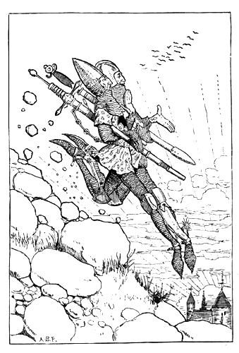
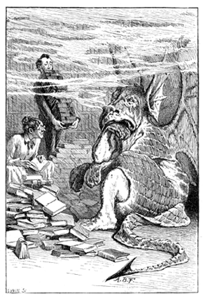
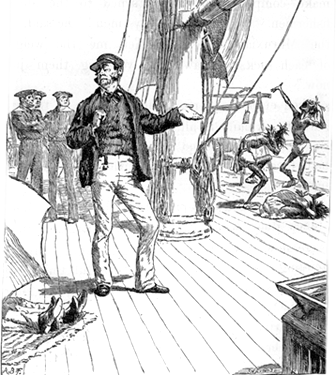
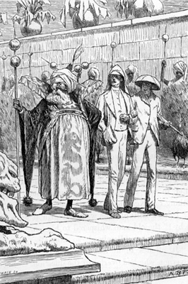
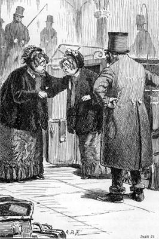
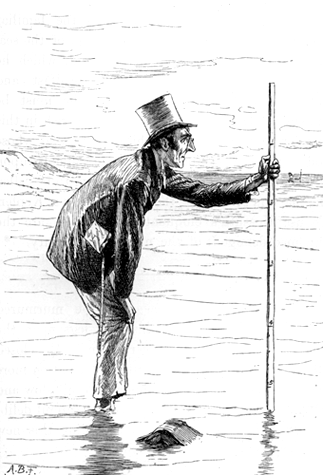
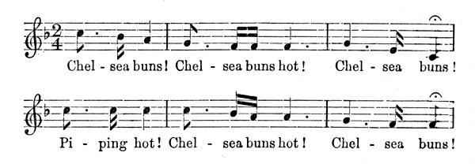
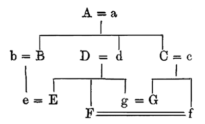
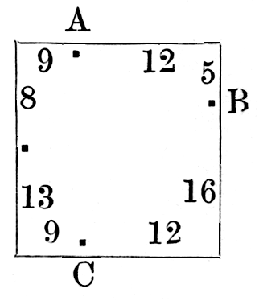

1885 2026
This is an AI modernization of A Tangled Tale into contemporary English. The original is available from Project Gutenberg.
The Knots
Knot Nine: A Serpent with Corners
The Answers
Beloved pupil! Tamed by you — Addi-, Subtrac-, Multiplica-tion, Division, Fractions, Rule of Three — attest your deft manipulation!
This Tale first appeared as a serial in The Monthly Packet, beginning in April 1880. The writer's intention was to smuggle into each Knot — the way medicine used to be so deftly, and so ineffectually, hidden in the jam of our early childhood — one or more mathematical questions, in arithmetic, algebra or geometry as the case might be, for the amusement, and possible improvement, of that magazine's fair readers.
L. C.
October, 1885.

"Goblin, lead them up and down."
The red glow of sunset was already fading into the gloomy shadows of night when two travellers might have been observed descending the rugged side of a mountain at speed — at a pace of six miles in the hour — the younger bounding from crag to crag with the agility of a fawn, while his companion, whose aged limbs seemed thoroughly ill at ease in the heavy chain mail habitually worn by tourists in that district, toiled painfully along at his side.
As is always the way in such circumstances, the younger knight was the first to break the silence.
"A goodly pace, I trow!" he exclaimed. "We sped not thus in the ascent!"
"Goodly indeed!" the other echoed with a groan. "We clomb it but at three miles in the hour."
"And on the dead level our pace is —?" the younger suggested; for he was weak on statistics, and left all such details to his aged companion.
"Four miles in the hour," the other replied wearily. "Not an ounce more" — he added, with that love of metaphor so common in old age — "and not a farthing less!"
"'Twas three hours past high noon when we left our inn," said the young man, thoughtfully. "We shall scarce be back by supper-time. Perchance mine host will roundly deny us all food!"
"He will chide our tardy return," was the grave reply, "and such a rebuke will be meet."
"A brave conceit!" cried the other, with a merry laugh. "And should we bid him bring us yet another course, I trow his answer will be tart!"
"We shall but get our deserts," sighed the elder knight, who had never seen a joke in his life, and was somewhat displeased at his companion's untimely levity. "'Twill be nine of the clock," he added under his breath, "by the time we regain our inn. Full many a mile shall we have plodded this day!"
"How many? How many?" cried the eager youth, ever athirst for knowledge.
The old man was silent.
"Tell me," he answered, after a moment's thought, "what time it was when we stood together on yonder peak. Not exact to the minute!" he added hastily, reading a protest in the young man's face. "An' thy guess be within one poor half-hour of the mark, 'tis all I ask of thy mother's son. Then will I tell thee, true to the last inch, how far we shall have trudged betwixt three and nine of the clock."
A groan was the young man's only reply, while his convulsed features, and the deep wrinkles that chased one another across his manly brow, revealed the abyss of arithmetical agony into which a single chance question had plunged him.
"Straight down the crooked lane, And all round the square."
"Let's ask Balbus about it," said Hugh.
"All right," said Lambert.
"He can guess it," said Hugh.
"Rather," said Lambert.
No more words were needed. The two brothers understood each other perfectly.

Balbus was waiting for them at the hotel. The journey down had tired him, he said, so his two pupils had done the rounds of the place looking for lodgings without the old tutor who had been their inseparable companion since childhood.
They had named him after the hero of their Latin exercise-book, which overflowed with anecdotes about that versatile genius — anecdotes whose vagueness of detail was more than made up for by their sensational brilliance. "Balbus has overcome all his enemies" had been marked by their tutor in the margin of the book, "Successful Bravery." In this way he had tried to squeeze a moral out of every anecdote about Balbus. Sometimes it was a warning, as in "Balbus had borrowed a healthy dragon," against which he had written "Rashness in Speculation." Sometimes it was encouragement, as with the words "Influence of Sympathy in United Action," which stood opposite the anecdote "Balbus was assisting his mother-in-law to convince the dragon." And sometimes it dwindled to a single word, such as "Prudence," which was all he could extract from the touching record that "Balbus, having scorched the tail of the dragon, went away." His pupils liked the short morals best, since they left more room for illustrations in the margin; and in this instance they needed all the space they could get to convey the speed of the hero's departure.
Their report on the state of things was discouraging. That most fashionable of seaside resorts, Little Mendip, was "chockfull," as the boys put it, from end to end. But in one Square they had seen no fewer than four cards, in four different houses, all announcing in flaming capitals "ELIGIBLE APARTMENTS."
"So there's plenty of choice after all, you see," said Hugh, as spokesman, in conclusion.
"That doesn't follow from the data," said Balbus, getting up out of the easy chair where he had been dozing over The Little Mendip Gazette. "They may all be single rooms. Still, we may as well see them. I shall be glad to stretch my legs a bit."
An unprejudiced bystander might have objected that the operation was unnecessary, and that this long, lanky creature would have been better off with shorter legs; but no such thought occurred to his loving pupils. One on each side, they did their best to keep up with his gigantic strides, while Hugh repeated the sentence from their father's letter, just arrived from abroad, that he and Lambert had been puzzling over.
"He says a friend of his, the Governor of — what was that name again, Lambert?"
"Well, yes. The Governor of whatever-it-is wants to give a very small dinner party, and he means to invite his father's brother-in-law, his brother's father-in-law, his father-in-law's brother, and his brother-in-law's father. And we're to work out how many guests there will be."
There was an anxious pause.
"How large did he say the pudding was to be?" said Balbus at last. "Take its volume, divide by the volume of what each man can eat, and the quotient —"
"He didn't say anything about pudding," said Hugh. "And here's the Square" — as they turned a corner and came in sight of the eligible apartments.
"It is a Square!" was Balbus's first cry of delight, as he gazed round him. "Beautiful! Beau-ti-ful! Equilateral! And rectangular!"
The boys looked round with rather less enthusiasm. "Number nine is the first one with a card," said prosaic Lambert. But Balbus was not going to be woken so soon from his dream of beauty.
"Look, boys!" he cried. "Twenty doors to a side! What symmetry! Each side divided into twenty-one equal parts! It's delicious!"
"Shall I knock, or ring?" said Hugh, looking rather baffled at a square brass plate bearing the simple instruction "RING ALSO."
"Both," said Balbus. "That's an Ellipsis, my boy. Did you never see an Ellipsis before?"
"I could hardly read it," said Hugh, evasively. "It's no good having an Ellipsis if they don't keep it clean."
"Which there is one room, gentlemen," said the smiling landlady. "And a sweet room too! As snug a little back-room —"
"We will see it," said Balbus gloomily, as they followed her in. "I knew how it would be! One room in each house! No view, I suppose?"
"Which indeed there is, gentlemen!" the landlady protested indignantly, pulling up the blind and pointing out the back garden.
"Cabbages, I perceive," said Balbus. "Well, they're green, at any rate."
"Which the greens at the shops," their hostess explained, "are by no means dependable upon. Here you has them on the premises, and of the best."
"Does the window open?" was always Balbus's first question in testing a lodging, and "Does the chimney smoke?" his second. Satisfied on every point, he took first refusal on the room, and they moved on to Number Twenty-five.
This landlady was grave and stern. "I've nobbut one room left," she told them, "and it gives on the back-gyardin."
"But there are cabbages?" Balbus suggested.
The landlady visibly softened. "There is, sir," she said, "and good ones, though I say it as shouldn't. We can't rely on the shops for greens. So we grows them ourselves."
"A singular advantage," said Balbus; and after the usual questions they went on to Fifty-two.
"And I'd gladly accommodate you all, if I could," was the greeting that met them. "We are but mortal" — ("Irrelevant!" muttered Balbus) — "and I've let all my rooms but one."
"Which one is a back-room, I perceive," said Balbus, "and looking out on — on cabbages, I presume?"
"Yes indeed, sir!" said their hostess. "Whatever other folks may do, we grows our own. For the shops —"
"An excellent arrangement!" Balbus interrupted. "Then one can really depend on their being good. Does the window open?"
The usual questions were answered satisfactorily; but this time Hugh added one of his own invention: "Does the cat scratch?"
The landlady looked round suspiciously, as though making sure the cat was not listening. "I will not deceive you, gentlemen," she said. "It do scratch, but not without you pulls its whiskers! It'll never do it," she repeated slowly, with a visible effort to recall the exact wording of some written agreement between herself and the cat, "without you pulls its whiskers!"
"Much may be excused in a cat so treated," said Balbus, as they left the house and crossed to Number Seventy-three — leaving the landlady curtseying on the doorstep and still murmuring her parting words to herself, as if they were a form of blessing: "— not without you pulls its whiskers!"
At Number Seventy-three they found only a small shy girl to show them the house, who said "yes'm" in answer to every question.
"The usual room," said Balbus, as they marched in. "The usual back garden, the usual cabbages. I suppose you can't get them good at the shops?"
"Yes'm," said the girl.
"Well, you may tell your mistress we will take the room, and that her plan of growing her own cabbages is simply admirable!"
"Yes'm," said the girl, as she showed them out.
"One day-room and three bedrooms," said Balbus, as they walked back to the hotel. "We will take as our day-room whichever one gives us the least walking to do to get to it."
"Must we walk from door to door and count the steps?" said Lambert.
"No, no! Work it out, my boys, work it out!" Balbus exclaimed gaily, as he set pens, ink and paper in front of his hapless pupils, and left the room.
"I say! It'll be a job!" said Hugh.
"Rather!" said Lambert.
"I waited for the train."
"Well, they call me that because I am a little mad, I suppose," she said good-humouredly, in answer to Clara's carefully worded question about how she had come by such a strange nickname. "You see, I never do what sane people are expected to do these days. I never wear long trains — talking of trains, that's the Charing Cross Metropolitan Station; I've something to tell you about that — and I never play lawn tennis. I can't cook an omelette. I can't even set a broken limb. There's an ignoramus for you!"
Clara was her niece, and a full twenty years younger; in fact she was still at a High School, an institution Mad Mathesis spoke of with undisguised loathing. "Let a woman be meek and lowly!" she would say. "None of your High Schools for me!" But it was the holidays just now, and Clara was her guest, and Mad Mathesis was showing her the sights of that Eighth Wonder of the world — London.
"The Charing Cross Metropolitan Station!" she went on, waving a hand towards the entrance as though introducing her niece to a friend. "The Bayswater and Birmingham Extension has just been finished, and the trains now run round and round continuously — skirting the border of Wales, just touching at York, and so round by the east coast back to London. The way the trains run is most peculiar. The westerly ones go round in two hours; the easterly ones take three; but they always contrive to start two trains from here, in opposite directions, punctually every quarter of an hour."
"They part to meet again," said Clara, her eyes filling with tears at the romance of the thought.
"No need to cry about it!" her aunt remarked grimly. "They don't meet on the same set of rails, you know. Talking of meeting — an idea strikes me!" she added, changing the subject with her usual abruptness. "Let's go round in opposite directions and see which of us can meet the most trains. No need for a chaperone — ladies' saloon, you know. You shall go whichever way you like, and we'll have a bet on it!"
"I never make bets," said Clara very gravely. "Our excellent headmistress has often warned us —"
"You'd be none the worse if you did!" Mad Mathesis interrupted. "In fact you'd be the better for it, I'm certain."
"Nor does our excellent headmistress approve of puns," said Clara. "But we'll have a match, if you like. Let me choose my train," she added, after a brief calculation in her head, "and I undertake to meet exactly half as many again as you do."
"Not if you count fairly," Mad Mathesis bluntly interrupted. "Remember, we only count the trains we meet on the way. You mustn't count the one that starts as you start, nor the one that arrives as you arrive."
"That will only make a difference of one train," said Clara, as they turned and went into the station. "But I've never travelled alone before. There'll be nobody to help me down. Still, I don't mind. Let's have a match."
A ragged little boy overheard her and came running after her. "Buy a box of cigar-lights, Miss!" he pleaded, tugging her shawl to get her attention. Clara stopped to explain.
"I never smoke cigars," she said, in a meekly apologetic tone. "Our excellent headmistress —" But Mad Mathesis impatiently hurried her on, and the little boy was left staring after her with round eyes of amazement.
The two ladies bought their tickets and moved slowly down the central platform, Mad Mathesis chattering away as usual and Clara silent, anxiously going back over the calculation on which she had pinned her hopes of winning.
"Mind where you're going, dear!" cried her aunt, stopping her just in time. "One step more and you'd have been in that pail of cold water!"
"I know, I know," said Clara dreamily. "The pale, the cold, and the moony —"
"Take your places on the springboards!" shouted a porter.
"What are they for?" Clara asked in a terrified whisper.
"Merely to help us into the trains." The elder lady spoke with the nonchalance of somebody quite used to the process. "Very few people can get into a carriage unaided in less than three seconds, and the trains only stop for one."
At that moment the whistle sounded and two trains rushed into the station. A moment's pause, and they were gone again; but in that brief interval several hundred passengers had been shot into them, each flying straight to his place with the accuracy of a rifle bullet — while an equal number were showered out onto the side platforms.
Three hours went by, and the two friends met again on the Charing Cross platform and eagerly compared notes. Then Clara turned away with a sigh. To young impulsive hearts like hers, disappointment is always a bitter pill. Mad Mathesis followed her, full of kindly sympathy.
"Try again, my love!" she said cheerily. "Let us vary the experiment. We will start as we did before, but not begin counting until our trains meet. When we catch sight of each other we will say 'One!' and count on from there until we get back here."
Clara brightened. "I shall win that," she exclaimed eagerly, "if I may choose my train!"
Another shriek of engine whistles, another heaving of springboards, another living avalanche flung into two trains as they flashed past; and the travellers were off again.
Each gazed eagerly out of her carriage window, holding up a handkerchief as a signal to her friend. A rush and a roar. Two trains shot past each other in a tunnel, and two travellers leaned back in their corners with a sigh — or rather with two sighs — of relief.
"One!" Clara murmured to herself. "Won! It's a word of good omen. This time, at any rate, the victory will be mine!"
"I did dream of money-bags to-night."
[Note on the money: the sums in this book are in the old British currency, and several of them come out the way they do precisely because of it. Twelve pence make a shilling, twenty shillings make a pound, and a guinea is twenty-one shillings.]
Noon on the open sea within a few degrees of the Equator is apt to be oppressively warm, and our two travellers were now lightly dressed in suits of dazzling white linen, having laid aside the chain mail they had found not merely bearable in the cold mountain air they had lately been breathing, but a necessary precaution against the daggers of the bandits who infested the heights. Their holiday was over, and they were on their way home in the monthly packet boat that ran between the two great ports of the island they had been exploring.
Along with their armour the tourists had laid aside the antiquated speech it had amused them to affect while in knightly disguise, and had gone back to the ordinary manner of two country gentlemen of the nineteenth century.
Stretched out on a pile of cushions in the shade of an enormous umbrella, they were lazily watching some native fishermen who had come aboard at the last landing place, each carrying a small but heavy sack over his shoulder. A large weighing machine that had been used for cargo at the last port stood on the deck, and the fishermen had gathered round it and, with a great deal of unintelligible jabber, seemed to be weighing their sacks.
"More like sparrows in a tree than human speech, isn't it?" the elder tourist remarked to his son, who smiled feebly but would not exert himself so far as to reply. The old man tried another listener.
"What have they got in those sacks, Captain?" he inquired, as that great being passed them on his never-ending parade up and down the deck.
The Captain paused in his march and towered over the travellers — tall, grave and serenely satisfied with himself.
"Fishermen," he explained, "are often passengers in My ship. These five are from Mhruxi, the place we last touched at, and that is how they carry their money. The money of this island is heavy, gentlemen, but it costs little, as you may guess. We buy it from them by weight — about five shillings a pound. I fancy a ten-pound note would buy all those sacks."
By this time the old man had shut his eyes — in order, no doubt, to concentrate on these interesting facts; but the Captain failed to grasp his motive, and with a grunt resumed his monotonous march.
Meanwhile the fishermen were getting so noisy round the weighing machine that one of the sailors took the precaution of carrying off all the weights, leaving them to amuse themselves with whatever substitutes they could find in the way of winch handles, belaying pins and so on. That brought their excitement to a rapid end. They carefully hid their sacks in the folds of the jib that lay on the deck near the tourists, and strolled away.
When the Captain's heavy tread next went by, the younger man roused himself enough to speak.
"What did you say the place those fellows came from was called, Captain?"
"Mhruxi, sir."
"And the one we're bound for?"
The Captain took a long breath, plunged into the word, and came out of it nobly. "They call it Kgovjni, sir."
"K — I give it up," said the young man faintly.
He stretched out a hand for a glass of iced water the compassionate steward had brought him a minute earlier and had unluckily set down just outside the shadow of the umbrella. It was scalding hot, and he decided not to drink it. The effort of arriving at this decision, coming so soon after the exhausting conversation he had just been through, was too much for him, and he sank back among the cushions in silence.
His father politely tried to make up for his indifference.
"Whereabouts are we now, Captain?" he said. "Have you any idea?"
The Captain cast a pitying look at the ignorant landsman. "I could tell you that, sir," he said, in a tone of lofty condescension, "to an inch."
"You don't say so!" the old man remarked, with languid surprise.
"And mean so," the Captain persisted. "Why, what do you suppose would become of My ship if I were to lose My Longitude and My Latitude? Could you make anything of My Dead Reckoning?"
"Nobody could, I'm sure!" the other agreed heartily.
But he had overdone it.
"It is perfectly intelligible," said the Captain, in an offended tone, "to anyone who understands such things." And with that he moved off and began giving orders to the men, who were getting ready to hoist the jib.
Our tourists watched the operation with such interest that neither of them remembered the five money bags — which, a moment later, as the wind filled out the jib, were whirled overboard and fell heavily into the sea.
But the poor fishermen had not forgotten their property so easily. In an instant they had rushed to the spot and stood there uttering cries of fury, pointing now at the sea and now at the sailors who had caused the disaster.
The old man explained the matter to the Captain. "Let us make it up between us," he added in conclusion. "Ten pounds will do it, I think you said?"

But the Captain brushed the suggestion away with a wave of the hand.
"No, sir!" he said, in his grandest manner. "You will excuse Me, I am sure; but these are My passengers. The accident has happened aboard My ship and under My orders. It is for Me to make compensation."
He turned to the angry fishermen. "Come here, my men!" he said, in the Mhruxian dialect. "Tell me the weight of each sack. I saw you weighing them just now."
There followed a perfect Babel of noise, as the five natives explained, all screaming at once, how the sailors had carried off the weights and they had done what they could with whatever came to hand.
Two iron belaying pins, three blocks, six holystones, four winch handles and a large hammer were now carefully weighed, with the Captain supervising and noting the results. But even then the matter did not seem to be settled. An angry discussion broke out, in which the sailors and the five natives all joined; and at last the Captain came over to our tourists with a disconcerted look that he tried to hide under a laugh.
"It's an absurd difficulty," he said. "Perhaps one of you gentlemen can suggest something. It seems they weighed the sacks two at a time!"
"If they didn't do five separate weighings, then of course you can't value them separately," the youth decided hastily.
"Let's hear the whole of it," was the old man's more cautious remark.
"They did do five separate weighings," said the Captain, "but — well, it beats me entirely!" he added, in a sudden burst of candour. "Here is the result. The first and second sacks weighed twelve pounds; the second and third, thirteen and a half; the third and fourth, eleven and a half; the fourth and fifth, eight. And then they say they had only the large hammer left, and it took three sacks to weigh it down — the first, third and fifth — and those weighed sixteen pounds. There, gentlemen! Did you ever hear anything like it?"
The old man muttered under his breath, "If only my sister were here!" and looked helplessly at his son. His son looked at the five natives. The five natives looked at the Captain. The Captain looked at nobody. His eyes were cast down, and he seemed to be saying softly to himself, "Contemplate one another, gentlemen, if such be your good pleasure. I contemplate Myself."
"Look here, upon this picture, and on this."
"And what made you choose the first train, Goosey?" said Mad Mathesis, as they got into the cab. "Couldn't you count better than that?"
"I took an extreme case," was the tearful reply. "Our excellent headmistress always says, 'When in doubt, my dears, take an extreme case.' And I was in doubt."
"Does it always work?" her aunt inquired.
Clara sighed. "Not always," she admitted reluctantly. "And I can't make out why. One day she was telling the little girls — they make such a noise at tea, you know — 'The more noise you make, the less jam you will have, and vice versa.' And I thought they wouldn't know what 'vice versa' meant, so I explained it to them. I said, 'If you make an infinite noise, you'll get no jam; and if you make no noise, you'll get an infinite quantity of jam.' But our excellent headmistress said that wasn't a good example. Why wasn't it?" she added plaintively.
Her aunt sidestepped the question. "One can see certain objections to it," she said. "But how did you work it with the Metropolitan trains? None of them go infinitely fast, I believe."
"I called them hares and tortoises," said Clara — a little timidly, because she dreaded being laughed at. "And I thought there couldn't be as many hares as tortoises on the line, so I took an extreme case: one hare and an infinite number of tortoises."
"An extreme case indeed," her aunt remarked with admirable gravity, "and a most dangerous state of affairs!"
"And I thought that if I went with a tortoise there would be only one hare to meet; but if I went with the hare — you know there were crowds of tortoises!"
"It wasn't a bad idea," said the elder lady, as they got out of the cab at the entrance to Burlington House. "You shall have another chance today. We'll have a match at marking pictures."
Clara brightened. "I should like to try again, very much," she said. "I'll be more careful this time. How do we play?"
To this question Mad Mathesis made no reply. She was busy ruling lines down the margins of the catalogue.
"There," she said after a minute. "I've drawn three columns against the names of the pictures in the long room, and I want you to fill them with oughts and crosses — crosses for good marks and oughts for bad. The first column is for choice of subject, the second for arrangement, the third for colouring. And these are the conditions of the match. You must give three crosses to two or three pictures. You must give two crosses to four or five —"
"Do you mean only two crosses?" said Clara. "Or may I count the three-cross pictures among the two-cross ones?"
"Of course you may," said her aunt. "Anybody who has three eyes may be said to have two eyes, I suppose?"
Clara followed her aunt's dreamy gaze across the crowded gallery, half afraid she might find there was a three-eyed person in sight.
"And you must give one cross to nine or ten."
"And who wins the match?" Clara asked, as she carefully copied down these conditions on a blank page of her catalogue.
"Whoever marks the fewest pictures."
"But suppose we mark the same number?"
"Then whoever uses the most marks."
Clara considered. "I don't think it's much of a match," she said. "I shall mark nine pictures, and give three crosses to three of them, two crosses to two more, and one cross each to all the rest."
"Will you indeed?" said her aunt. "Wait until you have heard all the conditions, my impetuous child. You must give three oughts to one or two pictures, two oughts to three or four, and one ought to eight or nine. I don't want you to be too hard on the Royal Academicians."
Clara positively gasped as she wrote down all these fresh conditions. "It's a great deal worse than Recurring Decimals!" she said. "But I'm determined to win, all the same."
Her aunt smiled grimly. "We can begin here," she said, as they stopped in front of an enormous picture which the catalogue informed them was the "Portrait of Lieutenant Brown, mounted on his favourite elephant."
"He looks awfully pleased with himself!" said Clara. "I don't think he was the elephant's favourite Lieutenant. What a hideous picture it is! And it takes up room enough for twenty!"
"Mind what you say, my dear!" her aunt put in. "It's by a Royal Academician!"
But Clara was quite reckless. "I don't care who it's by!" she cried. "And I shall give it three bad marks!"
Aunt and niece soon drifted apart in the crowd, and for the next half hour Clara was hard at work putting marks in and rubbing them out again, and hunting up and down for suitable pictures. This she found the hardest part of the whole business.
"I can't find the one I want!" she exclaimed at last, almost crying with vexation.
"What is it you want to find, my dear?"
The voice was strange to Clara, but so sweet and gentle that she felt drawn to its owner before she had even seen her; and when she turned and met the smiling faces of two little old ladies, whose round dimpled faces, exactly alike, seemed never to have known a care in the world, it was all she could do — as she confessed to Aunt Mattie afterwards — to stop herself hugging them both.
"I was looking for a picture," she said, "that has a good subject, and is well arranged, but is badly coloured."
The two little old ladies glanced at one another in some alarm. "Calm yourself, my dear," said the one who had spoken first, "and try to remember which it was. What was the subject?"
"Was it an elephant, for instance?" the other sister suggested. They were still within sight of Lieutenant Brown.
"I don't know, I'm sure!" Clara replied impetuously. "You know it doesn't matter a bit what the subject is, so long as it's a good one!"
Once more the sisters exchanged looks of alarm, and one whispered something to the other, of which Clara caught only the single word "mad."
"They mean Aunt Mattie, of course," she said to herself — imagining, in her innocence, that London was like her own home town, where everybody knew everybody else. "If you mean my aunt," she added aloud, "she's over there, just three pictures past Lieutenant Brown."
"Ah, well! Then you had better go to her, my dear," her new friend said soothingly. "She'll find you the picture you want. Goodbye, dear!"
"Goodbye, dear!" echoed the other sister. "Mind you don't lose sight of your aunt!"
And the pair trotted off into another room, leaving Clara rather puzzled by their manner.
"They're real darlings!" she said to herself. "I wonder why they pity me so." And she wandered on, murmuring, "It must have two good marks, and —"
"One piecee thing that my have got, Maskee that thing my no can do. You talkee you no sabey what? Bamboo."
[Note: "Maskee," in the pidgin English of the treaty ports, means "without."]
They landed, and were taken at once to the Palace. About halfway there they were met by the Governor, who welcomed them in English — a great relief to our travellers, whose guide could speak nothing but Kgovjnian.
"I don't half like the way they grin at us as we go by," the old man whispered to his son. "And why do they say 'Bamboo!' so often?"
"It refers to a local custom," replied the Governor, who had overheard the question. "Anyone who happens in any way to displease Her Radiancy is generally beaten with rods."

The old man shuddered. "A most objectionable local custom!" he remarked with strong emphasis. "I wish we had never landed. Did you notice that fellow, Norman, opening his great mouth at us? I truly believe he would like to eat us."
Norman appealed to the Governor, who was walking on his other side. "Do they often eat distinguished strangers here?" he said, in as unconcerned a tone as he could manage.
"Not often — not ever!" was the welcome reply. "They are not good for it. Pigs we eat, for they are fat. This old man is thin."
"And thankful to be so!" muttered the elder traveller. "Beaten we shall be, without a doubt. It is a comfort to know it will not be Beaten without the B. My dear boy, just look at the peacocks!"
They were now walking between two unbroken lines of those gorgeous birds, each held in check by a golden collar and chain in the hand of a slave who stood well back, so as not to block the view of the glittering tail with its net of rustling feathers and its hundred eyes.
The Governor smiled proudly. "In your honour," he said, "Her Radiancy has ordered up ten thousand additional peacocks. She will no doubt decorate you, before you go, with the usual Star and Feathers."
"It'll be Star without the S!" faltered one of his listeners.
"Come, come! Don't lose heart!" said the other. "All this is full of charm for me."
"You are young, Norman," sighed his father, "young and light-hearted. For me it is Charm without the C."
"The old one is sad," the Governor remarked with some anxiety. "He has, without doubt, committed some fearful crime?"
"But I haven't!" the poor old gentleman exclaimed hastily. "Tell him I haven't, Norman!"
"He has not, as yet," Norman explained gently. And the Governor repeated, in a satisfied tone, "Not as yet."
"Yours is a wondrous country!" the Governor resumed, after a pause. "Now here is a letter from a friend of mine, a merchant, in London. He and his brother went there a year ago with a thousand pounds apiece; and on New Year's Day they had sixty thousand pounds between them!"
"How did they do it?" Norman exclaimed eagerly. Even the elder traveller looked excited.
The Governor handed him the open letter. "Anybody can do it, once they know how," ran this oracular document. "We borrowed nothing; we stole nothing. We began the year with only a thousand pounds apiece, and last New Year's Day we had sixty thousand pounds between us — sixty thousand golden sovereigns!"
Norman looked grave and thoughtful as he handed the letter back. His father hazarded one guess. "Was it by gambling?"
"A Kgovjnian never gambles," said the Governor gravely, as he showed them through the palace gates.
They followed him in silence down a long passage, and soon found themselves in a lofty hall lined entirely with peacocks' feathers. In the middle was a heap of crimson cushions that almost hid the figure of Her Radiancy — a plump little girl in a robe of green satin dotted with silver stars, whose pale round face lit up for a moment with a half-smile as the travellers bowed before her, and then settled back into the exact expression of a wax doll, while she languidly murmured a word or two in the Kgovjnian dialect.
The Governor interpreted. "Her Radiancy welcomes you. She notes the Impenetrable Placidity of the old one, and the Imperceptible Acuteness of the youth."
Here the little potentate clapped her hands, and a troop of slaves instantly appeared carrying trays of coffee and sweets, which they offered to the guests, who at a signal from the Governor had seated themselves on the carpet.
"Sugar-plums!" muttered the old man. "One might as well be at a confectioner's. Ask for a penny bun, Norman!"
"Not so loud!" his son whispered. "Say something complimentary!" For the Governor was evidently expecting a speech.
"We thank Her Exalted Potency," the old man began timidly. "We bask in the light of her smile, which —"
"The words of old men are weak!" the Governor interrupted angrily. "Let the youth speak!"
"Tell her," cried Norman, in a wild burst of eloquence, "that, like two grasshoppers in a volcano, we are shrivelled up in the presence of Her Spangled Vehemence!"
"It is well," said the Governor, and translated this into Kgovjnian. "I am now to tell you," he went on, "what Her Radiancy requires of you before you go. The yearly competition for the post of Imperial Scarf-maker has just ended, and you are the judges. You will take account of the rate of work, the lightness of the scarves, and their warmth.
"Usually the competitors differ in one point only. Thus, last year, Fifi and Gogo made the same number of scarves in the trial week, and they were equally light; but Fifi's were twice as warm as Gogo's, and she was pronounced twice as good. But this year, woe is me, who can judge it? Three competitors are here, and they differ in every point! While you are settling their claims you shall be lodged, Her Radiancy bids me say, free of expense — in the best dungeon, and abundantly fed on the best bread and water."
The old man groaned. "All is lost!" he wildly exclaimed. But Norman paid no attention to him: he had taken out his notebook and was calmly jotting down the particulars.
"Three they be," the Governor continued: "Lolo, Mimi and Zuzu. Lolo makes five scarves while Mimi makes two; but Zuzu makes four while Lolo makes three. Again, so fairylike is Zuzu's handiwork that five of her scarves weigh no more than one of Lolo's; yet Mimi's are lighter still — five of hers will only balance three of Zuzu's. And for warmth, one of Mimi's is equal to four of Zuzu's; yet one of Lolo's is as warm as three of Mimi's!"
Here the little lady clapped her hands once more.
"It is our signal of dismissal!" the Governor said hastily. "Pay Her Radiancy your farewell compliments — and walk out backwards."
The walking part was all the elder tourist could manage. Norman simply said: "Tell Her Radiancy we are transfixed by the spectacle of Her Serene Brilliance, and bid an agonized farewell to Her Condensed Milkiness!"
"Her Radiancy is pleased," the Governor reported, after duly translating this. "She casts on you a glance from Her Imperial Eyes, and is confident that you will catch it!"
"That I warrant we shall!" the elder traveller moaned distractedly to himself.
Once more they bowed low, and then followed the Governor down a winding staircase to the Imperial Dungeon, which they found to be lined with coloured marble, lit from the roof, and splendidly if not luxuriously furnished with a bench of polished malachite.
"I trust you will not delay the calculation," the Governor said, ushering them in with much ceremony. "I have known great inconvenience — great and serious inconvenience — result to those unhappy ones who have delayed to carry out the commands of Her Radiancy. And on this occasion she is resolute: she says the thing must and shall be done; and she has ordered up ten thousand additional bamboos!"
With these words he left them, and they heard him lock and bar the door on the outside.
"I told you how it would end!" moaned the elder traveller, wringing his hands, and quite forgetting in his anguish that he had proposed the expedition himself, and had never predicted anything of the kind. "Oh, that we were well out of this miserable business!"
"Courage!" cried the younger cheerily. "Haec olim meminisse juvabit — one day it will be a pleasure to remember even this! The end of it all will be glory!"
"Glory without the L!" was all the poor old man could say, as he rocked himself to and fro on the malachite bench. "Glory without the L!"
"Base is the slave that pays."
"My child?"
"Would you mind writing it down at once? I shall be quite certain to forget it if you don't!"
"My dear, we really must wait until the cab stops. How can I possibly write anything in the middle of all this jolting?"
"But I really shall be forgetting it!"
Clara's voice took on the plaintive tone her aunt never knew how to resist, and with a sigh the old lady drew out her ivory notebook and prepared to record the amount Clara had just spent at the confectioner's. Her spending was always done out of her aunt's purse, but the poor girl knew from bitter experience that sooner or later Mad Mathesis would want an exact account of every penny that had gone; and she waited with ill-concealed impatience while the old lady turned the leaves over and over until she found the one headed "PETTY CASH."
"Here's the place," she said at last, "and here is yesterday's lunch duly entered. One glass of lemonade — why can't you drink water, like me? — three sandwiches — they never put in half enough mustard; I told the young woman so to her face, and she tossed her head, the impudence of her! — and seven biscuits. Total, one shilling and twopence. Well, now for today's."
"One glass of lemonade —" Clara was beginning to say, when the cab suddenly drew up and a courteous railway porter was handing the bewildered girl out before she had had time to finish her sentence.
Her aunt pocketed the notebook instantly. "Business first," she said. "Petty cash — which is a form of pleasure, whatever you may think — afterwards."
And she went on to pay the driver and give voluminous instructions about the luggage, quite deaf to the pleas of her unhappy niece that she should enter the rest of the lunch account.
"My dear, you really must cultivate a more capacious mind!" was all the consolation she granted the poor girl. "Are the tablets of your memory not wide enough to hold the record of one single lunch?"
"Not wide enough! Not half wide enough!" was the passionate reply.
The words came in aptly enough, but the voice was not Clara's, and both ladies turned in some surprise to see who had struck so suddenly into their conversation. A fat little old lady was standing at the door of a cab, helping the driver to extract what seemed to be an exact duplicate of herself. It would have been no easy task to decide which of the two sisters was the fatter, or which looked the more good-humoured.
"I tell you the cab-door isn't half wide enough!" she repeated, as her sister finally emerged, rather in the manner of a pellet out of a popgun; and she turned to appeal to Clara. "Is it, dear?" she said, trying hard to bring a frown onto a face that dimpled all over with smiles.
"Some folks is too wide for 'em," growled the cab driver.

"Don't provoke me, man!" cried the little old lady, in what she meant for a tempest of fury. "Say another word and I'll put you into the County Court and sue you for a Habeas Corpus!"
The cabman touched his hat and marched off, grinning.
"Nothing like a little Law to cow the ruffians, my dear," she remarked confidentially to Clara. "You saw how he quailed when I mentioned the Habeas Corpus? Not that I have the least idea what it means, but it sounds very grand, doesn't it?"
"It's very provoking," Clara replied, a little vaguely.
"Very!" the little old lady repeated eagerly. "And we are very much provoked indeed. Aren't we, sister?"
"I never was so provoked in all my life!" the fatter sister assented, radiantly.
By this time Clara had recognized her acquaintances from the picture gallery, and drawing her aunt aside she hastily whispered her recollections. "I met them first at the Royal Academy — and they were very kind to me — and they were having lunch at the next table to us just now, you know — and they tried to help me find the picture I wanted — and I'm sure they're dear old things!"
"Friends of yours, are they?" said Mad Mathesis. "Well, I like their looks. You can be civil to them while I get the tickets. But do try to arrange your ideas a little more chronologically!"
And so it came about that the four ladies found themselves sitting side by side on the same bench waiting for the train, chatting as though they had known one another for years.
"Now this I call quite a remarkable coincidence!" exclaimed the smaller and more talkative of the two sisters — the one whose legal knowledge had annihilated the cab driver. "Not merely that we should be waiting for the same train, and at the same station — that would be curious enough — but actually on the same day, and at the same hour of the day! That is what strikes me so forcibly."
She glanced at the fatter and more silent sister, whose chief function in life seemed to be to support the family opinion, and who meekly responded: "And me too, sister!"
"Those are not independent coincidences —" Mad Mathesis was just beginning, when Clara ventured to interrupt.
"There's no jolting here," she pleaded meekly. "Would you mind writing it down now?"
Out came the ivory notebook once more. "What was it, then?" said her aunt.
"One glass of lemonade, one sandwich, one biscuit — oh dear me!" cried poor Clara, her historical tone suddenly turning into a wail of agony.
"Toothache?" said her aunt calmly, as she wrote down the items. The two sisters instantly opened their handbags and produced two different remedies for neuralgia, each labelled "unequalled."
"It isn't that!" said poor Clara. "Thank you very much. It's only that I can't remember how much I paid!"
"Well, try and work it out, then," said her aunt. "You've got yesterday's lunch to help you, you know. And here's the lunch we had the day before — the first day we went to that shop — one glass of lemonade, four sandwiches, ten biscuits. Total, one shilling and fivepence."
She handed the notebook to Clara, who gazed at it with eyes so dim with tears that at first she did not notice she was holding it upside down.
The two sisters had been listening to all this with the deepest interest, and at this point the smaller one laid a hand softly on Clara's arm.
"Do you know, my dear," she said coaxingly, "my sister and I are in the very same predicament? Quite identically the very same predicament! Aren't we, sister?"
"Quite identically and absolutely the very —" began the fatter sister; but she was constructing her sentence on too large a scale, and the little one would not wait for her to finish it.
"Yes, my dear," she went on. "We were having lunch at the very same shop as you were — and we had two glasses of lemonade and three sandwiches and five biscuits — and neither of us has the least idea what we paid. Have we, sister?"
"Quite identically and absolutely —" murmured the other, who evidently considered that she was now a whole sentence in arrears, and that she ought to discharge one obligation before taking on any fresh liabilities. But the little lady broke in again, and she retired from the conversation a bankrupt.
"Would you work it out for us, my dear?" the little old lady pleaded.
"You can do Arithmetic, I trust?" her aunt said, a little anxiously, as Clara turned from one page to the other, vainly trying to collect her thoughts. Her mind was a blank, and all human expression was rapidly fading out of her face.
A gloomy silence followed.
"This little pig went to market: This little pig staid at home."
"By Her Radiancy's express command," said the Governor, as he conducted the travellers out of the Imperial presence for the last time, "I shall now have the ecstasy of escorting you as far as the outer gate of the Military Quarter, where the agony of parting — if indeed Nature can survive the shock — must be endured. From that gate grurmstipths start every quarter of an hour, in both directions —"
"Would you mind repeating that word?" said Norman. "Grurm —?"
"Grurmstipths," the Governor repeated. "You call them omnibuses in England. They run both ways, and you can travel by one of them the whole way down to the harbour."
The old man breathed a sigh of relief. Four hours of courtly ceremony had exhausted him, and he had been in constant terror that something would bring the ten thousand additional bamboos into use.
A minute later they were crossing a large quadrangle, paved with marble and tastefully decorated with a pigsty in each corner. Soldiers carrying pigs were marching in every direction; and in the middle stood a gigantic officer giving orders in a voice of thunder that made itself heard above the whole uproar of the pigs.
"It is the Commander-in-Chief!" the Governor whispered hurriedly to his companions, who at once followed his example and prostrated themselves before the great man. The Commander bowed gravely in return. He was covered in gold lace from head to foot, his face wore an expression of deep misery, and he had a little black pig under each arm. Still the gallant fellow did his best, in among the orders he was issuing every moment to his men, to bid a courteous farewell to the departing guests.
"Farewell, O old one — carry these three to the South corner — and farewell to you, young one — put this fat one on top of the others in the Western sty — may your shadows never grow less — woe is me, it is wrongly done! Empty out all the sties and begin again!"
And the soldier leaned on his sword and wiped away a tear.
"He is in distress," the Governor explained as they left the courtyard. "Her Radiancy has commanded him to put twenty-four pigs into those four sties in such a way that, as she goes round the court, she shall always find the number in each sty nearer to ten than the number in the one before."
"Does she call ten nearer to ten than nine is?" said Norman.
"Surely," said the Governor. "Her Radiancy would allow that ten is nearer to ten than nine is — and nearer than eleven is, too."
"Then I think it can be done," said Norman.
The Governor shook his head. "The Commander has been transferring them in vain for four months," he said. "What hope is there left? And Her Radiancy has ordered up ten thousand additional —"
"The pigs don't seem to enjoy being transferred," the old man hastily interrupted. He did not like the subject of bamboos.
"They are only provisionally transferred, you understand," said the Governor. "In most cases they are carried straight back again, so they need not mind it. And the whole thing is done with the greatest care, under the personal supervision of the Commander-in-Chief."
"Of course she would only go round once?" said Norman.
"Alas, no!" sighed their guide. "Round and round. Round and round. These are Her Radiancy's own words. But oh, agony! Here is the outer gate, and we must part!"
He sobbed as he shook hands with them, and the next moment was walking briskly away.
"He might have waited to see us off!" said the old man, piteously.
"And he needn't have begun whistling the very moment he left us," said the young one, severely. "But look sharp — here are two what's-their-names just starting!"
Unluckily the seaward omnibus was full. "Never mind!" said Norman cheerily. "We'll walk on until the next one overtakes us."
They trudged on in silence, both turning the military problem over in their minds, until they met an omnibus coming up from the sea. The elder traveller took out his watch. "Just twelve and a half minutes since we started," he remarked absently.
Then suddenly the vacant face brightened: the old man had an idea.
"My boy!" he shouted, bringing his hand down on Norman's shoulder so abruptly as to shift his centre of gravity, for a moment, clean outside his base of support.
Caught off guard like this, the young man staggered wildly forward and seemed about to plunge into space; but a moment later he had gracefully recovered himself. "A problem in Precession and Nutation," he remarked, in a tone in which filial respect only just managed to conceal a shade of annoyance. "What is it?" he added hastily, afraid his father might have been taken ill. "Will you have some brandy?"
"When will the next omnibus overtake us? When? When?" cried the old man, growing more excited every moment.
Norman looked gloomy. "Give me time," he said. "I must think it over."
And once more the travellers went on in silence — a silence broken only by the distant squeals of the unfortunate little pigs, who were still being provisionally transferred from sty to sty, under the personal supervision of the Commander-in-Chief.
"Water, water, every where, Nor any drop to drink."
"It'll just take one more pebble."
"What ever are you doing with those buckets?"
The speakers were Hugh and Lambert. Place: the beach at Little Mendip. Time: half past one in the afternoon. Hugh was floating one bucket inside another a size larger, and testing how many pebbles it would carry without sinking. Lambert was lying on his back doing nothing.
For the next minute or two Hugh was silent, evidently deep in thought. Then suddenly he started up. "I say, look here, Lambert!" he cried.
"If it's alive, and slimy, and has legs, I'd rather not," said Lambert.
"Didn't Balbus say this morning that if a body is put into a liquid, it displaces as much liquid as is equal to its own bulk?" said Hugh.
"He said things of that sort," Lambert replied vaguely.
"Well, just look here a minute. Here's the little bucket almost completely under, so the water displaced ought to be just about the same bulk. And now look at it!" He lifted the little bucket out as he spoke and handed the big one to Lambert. "Why, there's hardly a teacupful! Do you mean to tell me that water is the same bulk as the little bucket?"
"Course it is," said Lambert.
"Well, look here again!" cried Hugh triumphantly, pouring the water from the big bucket into the little one. "Why, it doesn't half fill it!"
"That's its business," said Lambert. "If Balbus says it's the same bulk, then it is the same bulk, you know."
"Well, I don't believe it," said Hugh.
"You needn't," said Lambert. "Besides, it's dinner-time. Come on."
They found Balbus waiting dinner for them, and Hugh at once put his difficulty to him.
"Let's get you helped first," said Balbus, carving briskly at the joint. "You know the old proverb: 'Mutton first, mechanics afterwards'?"
The boys did not know the proverb, but they accepted it in perfect good faith, as they did every piece of information, however startling, that came from so infallible an authority as their tutor. They ate steadily on in silence; and when dinner was over Hugh set out the usual array of pens, ink and paper, while Balbus repeated to them the problem he had prepared for their afternoon's work.
"A friend of mine has a flower garden — a very pretty one, though not large —"
"How big is it?" said Hugh.
"That is what you have to find out!" Balbus replied gaily. "All I tell you is that it is oblong — just half a yard longer than it is wide — and that a gravel path, one yard wide, begins at one corner and runs all round it."
"Joining up with itself?" said Hugh.
"Not joining up with itself, young man. Just before it does that, it turns a corner and runs round the garden again, alongside the first stretch, and then inside that again, winding in and in, each lap touching the last, until it has used up the whole of the area."
"Like a serpent with corners?" said Lambert.
"Exactly so. And if you walk the whole length of it, down to the last inch, keeping to the centre of the path, it comes to exactly two miles and half a furlong. Now, while you two work out the length and breadth of the garden, I'll see whether I can think out that sea-water puzzle."
"You said it was a flower garden?" Hugh inquired, as Balbus was leaving the room.
"I did," said Balbus.
"Where do the flowers grow?" said Hugh. But Balbus thought it best not to hear the question.
He left the boys to their problem and, in the silence of his own room, set about unravelling Hugh's mechanical paradox.
"To fix our thoughts," he murmured to himself, pacing up and down the room with his hands deep in his pockets, "we will take a cylindrical glass jar, with a scale of inches marked up the side, and fill it with water up to the ten-inch mark; and we will assume that every inch of depth holds a pint of water. We will now take a solid cylinder, such that every inch of it equals half a pint of water in bulk, and plunge four inches of it into the water, so that the end of the cylinder comes down to the six-inch mark.
"Well, that displaces two pints of water. What becomes of them? Why, if there were no more cylinder they would lie comfortably on top and fill the jar up to the twelve-inch mark. But unfortunately there is more cylinder, taking up half the space between the ten-inch and the twelve-inch marks, so only one pint of water can be accommodated there. What becomes of the other pint? Why, if there were no more cylinder it would lie on top and fill the jar up to the thirteen-inch mark. But unfortunately —
"Shade of Newton!" he exclaimed, in sudden accents of terror. "When does the water stop rising?"
A bright idea struck him. "I'll write a little essay on it," he said.
"When a solid is immersed in a liquid, it is well known that it displaces a portion of the liquid equal to itself in bulk, and that the level of the liquid rises by just as much as it would rise if a quantity of liquid had been added equal in bulk to the solid. Lardner says that precisely the same process occurs when a solid is only partly immersed: the quantity of liquid displaced then equals the portion of the solid that is under, and the rise in level is in proportion.
"Suppose a solid to be held above the surface of a liquid and partly immersed. A portion of the liquid is displaced, and the level of the liquid rises. But by this rise in level a little more of the solid is of course immersed, and so there is a fresh displacement of a second portion of the liquid, and a consequent rise of level. Again, this second rise of level causes a further immersion, and in consequence another displacement of liquid and another rise. It is self-evident that this process must continue until the entire solid is immersed, and that the liquid will then begin to immerse whatever is holding the solid — which, being connected with it, must for the time be considered part of it.
"If you hold a stick six feet long with its end in a tumbler of water, and wait long enough, you must eventually be immersed. The question of where the water is supplied from — which belongs to a high branch of mathematics, and is therefore beyond our present scope — does not apply to the sea. Let us therefore take the familiar case of a man standing at the edge of the sea at low tide, with a solid in his hand which he partly immerses. He remains steadfast and unmoved, and we all know that he must be drowned. The multitudes who perish daily in this manner to attest a philosophical truth, and whose bodies the unreasoning wave casts sullenly upon our thankless shores, have a truer claim to be called the martyrs of science than a Galileo or a Kepler. To use Kossuth's eloquent phrase, they are the unnamed demigods of the nineteenth century."
[Note by the writer: for the above Essay I am indebted to a dear friend, now deceased.]
"There's a fallacy somewhere," he murmured drowsily, stretching his long legs out on the sofa. "I must think it over again."
He shut his eyes, in order to concentrate his attention more perfectly; and for the next hour or so his slow and regular breathing bore witness to the careful deliberation with which he was investigating this new and perplexing view of the subject.

"Yea, buns, and buns, and buns!"
Old Song.
"How very, very sad!" exclaimed Clara; and the gentle girl's eyes filled with tears as she spoke.
"Sad — but very curious, when you come to look at it arithmetically," was her aunt's less romantic reply. "Some of them have lost an arm in their country's service, some a leg, some an ear, some an eye —"
"And some, perhaps, all!" Clara murmured dreamily, as they passed the long rows of weather-beaten heroes basking in the sun. "Did you notice that very old one with the red face, who was drawing a map in the dust with his wooden leg while all the others watched? I think it was a plan of a battle —"
"The battle of Trafalgar, no doubt," her aunt interrupted briskly.
"Hardly that, I think," Clara ventured. "You see, in that case he couldn't very well be alive —"
"Couldn't very well be alive!" the old lady repeated contemptuously. "He's as lively as you and me put together! Why, if drawing a map in the dust — with one's wooden leg — doesn't prove one to be alive, perhaps you'll kindly mention what does prove it?"
Clara could not see her way out of that. Logic had never been her strong point.
"To return to the arithmetic," Mad Mathesis resumed — the eccentric old lady never let slip a chance of driving her niece into a calculation — "what percentage do you suppose must have lost all four: a leg, an arm, an eye and an ear?"
"How can I tell?" gasped the terrified girl. She knew perfectly well what was coming.
"You can't, of course, without data," her aunt replied. "But I'm just going to give you —"
"Give her a Chelsea bun, Miss! That's what most young ladies likes best!"
The voice was rich and musical, and the speaker deftly whipped back the snowy cloth that covered his basket to reveal a tempting array of the familiar square buns, joined together in rows, richly glazed and browned and glistening in the sun.
"No, sir! I shall give her nothing so indigestible! Be off!"
The old lady waved her parasol threateningly; but nothing seemed to disturb the good humour of the jolly old man, who marched on, chanting his melodious refrain:

"Far too indigestible, my love!" said the old lady. "Percentages will agree with you ever so much better."
Clara sighed, and there was a hungry look in her eyes as she watched the basket dwindling into the distance; but she listened meekly to the relentless old lady, who at once began counting off the data on her fingers.
"Say that seventy per cent have lost an eye — seventy-five per cent an ear — eighty per cent an arm — eighty-five per cent a leg. That'll do it beautifully. Now, my dear: what percentage, at the very least, must have lost all four?"
No further conversation took place — unless a smothered exclamation of "Piping hot!" that escaped Clara's lips as the basket disappeared round a corner can be counted as such — until they reached the old Chelsea mansion where Clara's father was then staying with his three sons and their old tutor.
Balbus, Lambert and Hugh had come into the house only a few minutes ahead of them. They had been out walking, and Hugh had been putting forward a difficulty that had reduced Lambert to the depths of gloom and had even puzzled Balbus.
"It changes from Wednesday to Thursday at midnight, doesn't it?" Hugh had begun.
"Sometimes," said Balbus cautiously.
"Always," said Lambert decisively.
"Sometimes," Balbus gently insisted. "Six midnights out of seven, it changes to some other name."
"I meant, of course," Hugh corrected himself, "that when it does change from Wednesday to Thursday, it does it at midnight — and only at midnight."
"Surely," said Balbus. Lambert was silent.
"Well then, suppose it's midnight here in Chelsea. Then it's Wednesday west of Chelsea — say in Ireland or America — where midnight hasn't arrived yet; and it's Thursday east of Chelsea — say in Germany or Russia — where midnight has just gone by."
"Surely," Balbus said again. Even Lambert nodded this time.
"But it isn't midnight anywhere else, so it can't be changing from one day to another anywhere else. And yet, if Ireland and America and the rest call it Wednesday, and Germany and Russia and the rest call it Thursday, there must be some place — not Chelsea — that has different days on the two sides of it. And the worst of it is, the people there get their days in the wrong order: they've got Wednesday to the east of them and Thursday to the west, just as if their day had changed from Thursday to Wednesday!"
"I've heard that puzzle before!" cried Lambert. "And I'll tell you the explanation. When a ship goes round the world from east to west, we know that it loses a day in its reckoning; so that when it gets home and calls its day Wednesday, it finds people here calling it Thursday, because we've had one more midnight than the ship has. And when you go the other way round, you gain a day."
"I know all that," said Hugh, in reply to this not very lucid explanation. "But it doesn't help me, because the ship hasn't proper days. One way round you get more than twenty-four hours to the day, and the other way you get less; so of course the names go wrong. But people who stay in one place always get twenty-four hours to the day."
"I suppose there is such a place," Balbus said meditatively, "though I never heard of it. And the people must find it very odd, as Hugh says, to have the old day east of them and the new one west — because when midnight comes round to them, with the new day in front of it and the old one behind it, one doesn't quite see what happens. I must think it over."
So they had come into the house in the state I have described: Balbus puzzled, and Lambert sunk in gloomy thought.
"Yes, m'm, Master is at home, m'm," said the stately old butler. (Note: only a butler of long experience can manage a run of three m's together without any intervening vowels.) "And the ole party is a-waiting for you in the libery."
"I don't like his calling your father an old party," Mad Mathesis whispered to her niece as they crossed the hall. And Clara had only just time to whisper back, "He meant the whole party," before they were shown into the library, and the sight of the five solemn faces assembled there chilled her into silence.
Her father sat at the head of the table and silently signed to the ladies to take the two empty chairs, one on each side of him. His three sons and Balbus made up the party. Writing materials had been laid round the table in the manner of a ghostly banquet; the butler had evidently given the grim design a great deal of thought. Sheets of quarto paper, each flanked by a pen on one side and a pencil on the other, stood in for the plates; pen-wipers did duty as bread rolls; and ink bottles occupied the places usually held by wine glasses. The centrepiece was a large green baize bag, which gave out, as the old man restlessly shifted it from side to side, a charming jingle as of innumerable golden guineas.
"Sister, daughter, sons — and Balbus —" the old man began, so nervously that Balbus put in a gentle "Hear, hear!" while Hugh drummed on the table with his fists. This disconcerted the unpractised orator.
"Sister —" he began again, then paused a moment, moved the bag to the other side, and went on in a rush, "I mean — this being — a critical occasion — more or less — being the year when one of my sons comes of age —" He paused again in some confusion, having plainly got into the middle of his speech sooner than he had intended; but it was too late to go back.
"Hear, hear!" cried Balbus.
"Quite so," said the old gentleman, recovering his composure a little. "When I first began this annual custom — my friend Balbus will correct me if I am wrong —" (Hugh whispered "with a strap!", but nobody heard him except Lambert, who only frowned and shook his head) "— this annual custom of giving each of my sons as many guineas as would represent his age — it was a critical time, so Balbus informed me, since the ages of two of you were together equal to that of the third. So on that occasion I made a speech —"
He paused so long that Balbus thought it well to come to the rescue with the words "It was a most —", but the old man checked him with a warning look. "Yes, made a speech," he repeated. "A few years after that, Balbus pointed out — I say pointed out —" ("Hear, hear!" cried Balbus. "Quite so," said the grateful old man) "— that it was another critical occasion. The ages of two of you were together double that of the third. So I made another speech — another speech. And now once again it is a critical occasion — so Balbus says — and I am making —"
Here Mad Mathesis pointedly consulted her watch.
"— all the haste I can!" the old man cried, with wonderful presence of mind. "Indeed, sister, I am coming to the point now! The number of years that have passed since that first occasion is just two-thirds of the number of guineas I gave you then. Now, my boys, calculate your ages from the data, and you shall have the money!"
"But we know our ages!" cried Hugh.
"Silence, sir!" thundered the old man, rising to his full height — he was exactly five foot five — in his indignation. "I say you must use the data only! You mustn't even assume which of you it is that comes of age!"
He clutched the bag as he spoke, and with tottering steps — it was about as much as he could do to carry it — he left the room.
"And you shall have a present just like it," the old lady whispered to her niece, "when you have calculated that percentage!" And she followed her brother out.
Nothing could have exceeded the solemnity with which the old couple rose from the table. And yet — was it, was it a grin with which the father turned away from his unhappy sons? Could it be — could it be a wink with which the aunt abandoned her despairing niece? And were those — were those sounds of suppressed chuckling that floated into the room just before Balbus, who had followed them out, closed the door? Surely not. And yet the butler told the cook — but no, that was merely idle gossip, and I will not repeat it.
The shades of evening granted their unspoken plea and closed not over them, for the butler brought in the lamp. The same obliging shades left them a lonely bark for a while — the wail of a dog in the back yard baying at the moon. But neither morning, alas, nor any other epoch seemed likely to restore them to that peace of mind which had once been theirs, before ever these problems swooped down on them and crushed them under a load of unfathomable mystery.
"It's hardly fair," muttered Hugh, "to give us such a jumble as this to work out!"
"Fair?" Clara echoed bitterly. "Well!"
And to all my readers I can only repeat gentle Clara's last words —
"A knot!" said Alice. "Oh, do let me help to undo it!"
Problem. "Two travellers spend from 3 o'clock till 9 walking along a level road, up a hill, and home again. Their pace on the level is 4 miles an hour, uphill 3, and downhill 6. Find the distance walked; also, to within half an hour, the time of reaching the top of the hill."
Answer. "24 miles; half past 6."
Solution. A mile on the level takes a quarter of an hour, uphill a third, downhill a sixth. So to go out and come back over the same mile — whether on the level or on the hillside — takes half an hour either way. So in 6 hours they went 12 miles out and 12 back. If the 12 miles out had been nearly all level they would have taken a little over 3 hours; if nearly all uphill, a little under 4. So three and a half hours must be within half an hour of the time taken to reach the summit; and since they started at 3, they got there within half an hour of half past 6.
Twenty-seven answers have come in. Of these, 9 are right, 16 partly right, and 2 wrong. The 16 give the distance correctly, but they have failed to grasp that the top of the hill might have been reached at any moment between 6 o'clock and 7.
The two wrong answers are from Gerty Vernon and A Nihilist. The former makes the distance "23 miles," while her revolutionary companion puts it at "27."
Gerty Vernon says, "they had to go 4 miles along the plain, and got to the foot of the hill at 4 o'clock." They might have done so, I grant you; but you have no grounds for saying they did. "It was seven and a half miles to the top of the hill, and they reached that at a quarter to 7." Here you go wrong in your arithmetic, and I must, however reluctantly, bid you farewell. Seven and a half miles at 3 miles an hour would not take two and three-quarter hours.
A Nihilist says: "Let x denote the whole number of miles, y the number of hours to the hilltop; therefore 3y = the number of miles to the hilltop, and x − 3y = the number of miles on the other side." You bewilder me. The other side of what? "Of the hill," you say. But then, how did they get home again?
However, to accommodate your views, we will build a new inn at the foot of the hill on the far side, and also assume — what I grant you is possible, though not necessarily true — that there was no level road at all. Even then you go wrong. You say:
y = 6 − (x − 3y)/6 (i) x / 4½ = 6 (ii)
I grant you (i), but I deny (ii). It rests on the assumption that going part of the time at 3 miles an hour and the rest at 6 miles an hour comes to the same thing as going the whole time at four and a half miles an hour. That would only be true if the "part" were an exact half — that is, if they went uphill for 3 hours and downhill for the other 3, which they certainly did not do.
The sixteen who are partly right are Agnes Bailey, F. K., Fifee, G. E. B., H. P., Kit, M. E. T., Mysie, A Mother's Son, Nairam, A Redruthian, A Socialist, Spear Maiden, T. B. C., Vis Inertiae, and Yak. Of these, F. K., Fifee, T. B. C. and Vis Inertiae do not attempt the second part at all. F. K. and H. P. show no working. The rest make particular assumptions — that there was no level road, that there were 6 miles of level road, and so on — all of which lead to particular times being fixed for reaching the hilltop.
The most curious assumption is Agnes Bailey's, who says: "Let x = the number of hours taken in the ascent; then x/2 = the hours taken in the descent, and 4x/3 = the hours spent on the level." I suppose you were thinking of the relative rates uphill and on the level, which we might express by saying that if they went x miles uphill in a certain time, they would go 4x/3 miles on the level in the same time. What you have in fact assumed is that they took the same time on the level as they took going up the hill.
Fifee assumes that when the aged knight said they had gone "four miles in the hour" on the level, he meant that four miles was the distance covered, and not merely the rate. That would have been — if Fifee will excuse the slang — a swindle, ill suited to the dignity of the hero.
And now, descend, ye classic Nine, who have solved the whole problem, and let me sing your praises. Your names are Blithe, E. W., L. B., A Marlborough Boy, O. V. L., Putney Walker, Rose, Sea Breeze, Simple Susan and Money Spinner. (These last two I count as one, since they send a joint answer.)
Rose, and Simple Susan and Co., do not actually state that the hilltop was reached some time between 6 and 7; but since they have clearly grasped that a mile ascended and descended takes the same time as two level miles, I mark them right.
A Marlborough Boy and Putney Walker deserve honourable mention for their algebraic solutions, being the only two who have seen that the question leads to an indeterminate equation.
E. W. brings a charge of untruthfulness against the aged knight — a serious charge, for he was the very pink of chivalry. She says: "According to the data given, the time at the summit affords no clue to the total distance. It does not enable us to state precisely, to an inch, how much level and how much hill there was on the road."
"Fair damsel," the aged knight replies, "if, as I surmise, thy initials denote Early Womanhood, bethink thee that the word 'enable' is thine, not mine. I did but ask the time of reaching the hilltop as my condition for further parley. If now thou wilt not grant that I am a truth-loving man, then will I affirm that those same initials denote Envenomed Wickedness!"
I. A Marlborough Boy. Putney Walker.
II.
Blithe.
E. W.
L. B.
O. V. L.
Rose.
Sea Breeze.
{ Simple Susan.
{ Money-Spinner.
Blithe has made so ingenious an addition to the problem, and Simple Susan and Co. have solved it in such tuneful verse, that I record both their answers in full. I have altered a word or two in Blithe's, which I trust she will excuse; it did not seem quite clear as it stood.
"Yet stay," said the youth, as a gleam of inspiration lit up the relaxing muscles of his quiescent features. "Stay. Methinks it matters little when we reached that summit, the crown of our toil. For in the space of time wherein we clambered up one mile and bounded down the same on our return, we could have trudged the two of them on the level. We have plodded, then, four-and-twenty miles in these six mortal hours; for never a moment did we stop, for catching of fleeting breath or for gazing on the scene around!"
"Very good," said the old man. "Twelve miles out and twelve miles in. And we reached the top some time between six and seven of the clock. Now mark me! For every five minutes that had fled since six of the clock when we stood on yonder peak, so many miles had we toiled upwards on the dreary mountainside!"
The youth moaned, and rushed into the inn.
Blithe.
The elder and the younger knight, they sallied forth at three; how far they went on level ground it matters not to me; what time they reached the foot of hill, when they began to mount, are problems which I hold to be of very small account.
Simple Susan. Money Spinner.
Problem. "The Governor of Kgovjni wants to give a very small dinner party, and invites his father's brother-in-law, his brother's father-in-law, his father-in-law's brother, and his brother-in-law's father. Find the number of guests."
In the genealogy below, males are shown by capitals and females by small letters. The Governor is E and his guest is C.

Ten answers have been received. Of these one is wrong: Galanthus Nivalis Major, who insists on inviting two guests, one of them being the Governor's wife's brother's father. If she had taken his sister's husband's father instead, she would have found it possible to reduce the guests to one.
Of the nine who send right answers, Sea-Breeze is the very faintest breath that ever bore the name. She simply states that the Governor's uncle might fulfil all the conditions "by intermarriages"! Wind of the western sea, you have had a very narrow escape. Be thankful to appear in the Class List at all.
Bog-Oak and Bradshaw of the Future use genealogies that require 16 people instead of 14, by inviting the Governor's father's sister's husband instead of his father's wife's brother. I cannot think this so good a solution as one that needs only 14. Caius and Valentine deserve special mention as the only two who have supplied genealogies.
I. Bee. Caius. M. M. Matthew Matticks. Old Cat. Valentine.
II. Bog-Oak. Bradshaw of the Future.
III. Sea-Breeze.
Problem. "A Square has 20 doors on each side, and each side contains 21 equal parts. The doors are numbered all round, beginning at one corner. From which of the four — Nos. 9, 25, 52, 73 — is the sum of the distances to the other three least?"

Let A be No. 9, B No. 25, C No. 52, and D No. 73. Then:
AB = √(12² + 5²) = √169 = 13 AC = 21 AD = √(9² + 8²) = √145 = 12+ (that is, between 12 and 13) BC = √(16² + 12²) = √400 = 20 BD = √(3² + 21²) = √450 = 21+ CD = √(9² + 13²) = √250 = 15+
So the sum of the distances from A is between 46 and 47; from B, between 54 and 55; from C, between 56 and 57; from D, between 48 and 51. (Why not "between 48 and 49"? Work that out for yourselves.) So the sum is least for A.
Twenty-five solutions have been received. Of these, 15 must be marked nought, 5 are partly right, and 5 right.
Of the 15, I may dismiss Alphabetical Phantom, Bog-Oak, Dinah Mite, Fifee, Galanthus Nivalis Major (I fear the cold spring has blighted our Snowdrop), Guy, H.M.S. Pinafore, Janet and Valentine with the simple remark that they insist on the unfortunate lodgers keeping to the pavement. I used the words "crossed to Number Seventy-three" for the express purpose of showing that short cuts were possible.
Sea-Breeze does the same, and adds that "the result would be the same" even if they crossed the Square — but gives no proof of it. M. M. draws a diagram and says that No. 9 is the house, "as the diagram shows." I cannot see how it does so. Old Cat assumes that the house must be either No. 9 or No. 73, and does not explain how she estimates the distances.
Bee's arithmetic is faulty: she makes √169 + √442 + √130 = 741. I suppose you mean √741, which would be a little nearer the truth. But roots cannot be added like that. Do you think √9 + √16 is 25 — or even √25?
Ayr's position is more perilous still: she draws illogical conclusions with a frightful calmness. After pointing out, rightly, that AC is less than BD, she says, "therefore the nearest house to the other three must be A or C." And again, after pointing out, rightly, that B and D are both within the half of the Square containing A, she says "therefore" AB + AD must be less than BC + CD. There is no logical force in either "therefore." For the first, try Nos. 1, 21, 60, 70: that will make your premise true and your conclusion false. For the second, try Nos. 1, 30, 51, 71.
Of the five partly right solutions, Rags and Tatters and Mad Hatter, who send one answer between them, make No. 25 six units from the corner instead of five. Cheam, E. R. D. L. and Meggy Potts leave openings at the corners of the Square, which are not in the data; and Cheam moreover gives values for the distances without any hint that they are only approximations.
Crophi and Mophi make the bold and unfounded assumption that there were really 21 houses on each side instead of the 20 stated by Balbus. "We may assume," they add, "that the doors of Nos. 21, 42, 63 and 84 are invisible from the centre of the Square"! What, I wonder, is there that Crophi and Mophi would not assume?
Of the five who are wholly right, I think Bradshaw of the Future, Caius, Clifton C. and Martreb deserve special praise for their full analytical solutions. Matthew Matticks picks out No. 9 and proves it to be the right house in two ways, very neatly and ingeniously — but why he picks it out does not appear. It is an excellent synthetic proof, but it lacks the analysis the other four supply.
I. Bradshaw of the Future. Caius. Clifton C. Martreb.
II. Matthew Matticks.
III.
Cheam.
Crophi and Mophi.
E. R. D. L.
Meggy Potts.
{ Rags and Tatters.
{ Mad Hatter.
A remonstrance has reached me from Scrutator on the subject of Knot One, which he declares was "no problem at all." "Two questions," he says, "are put. To solve one there is no data; the other answers itself."
As to the first point, Scrutator is mistaken: there are — not "is" — data sufficient to answer the question. As to the other, it is interesting to learn that the question "answers itself," and I am sure that does the question great credit. Still, I fear I cannot enter it on the list of winners, as this competition is only open to human beings.
Problem. (1) "Two travellers, starting at the same time, went opposite ways round a circular railway. Trains start each way every 15 minutes, the easterly ones going round in 3 hours, the westerly in 2. How many trains did each meet on the way, not counting trains met at the terminus itself?" (2) "They went round as before, each traveller counting as 'one' the train containing the other traveller. How many did each meet?"
Answers. (1) 19. (2) The easterly traveller met 12; the other 8.
The trains one way took 180 minutes, the other way 120. Take the lowest common multiple, 360, and divide the railway into 360 units. Then one set of trains went at the rate of 2 units a minute and at intervals of 30 units; the other at 3 units a minute and at intervals of 45 units.
An easterly train starting has 45 units between it and the first train it will meet. It covers two-fifths of this while the other covers three-fifths, and so meets it at the end of 18 units — and so on all the way round. A westerly train starting has 30 units between it and the first train it will meet. It covers three-fifths of this while the other covers two-fifths, and so meets it at the end of 18 units — and so on all the way round.
So if the railway is divided by 19 posts into 20 parts, each of 18 units, trains meet at every post; and in (1) each traveller passes 19 posts in going round, and therefore meets 19 trains.
But in (2) the easterly traveller only begins counting after covering two-fifths of the journey — that is, on reaching the 8th post — and so counts 12 posts; and similarly the other counts 8. They meet at the end of two-fifths of 3 hours, or three-fifths of 2 hours: that is, 72 minutes.
Forty-five answers have been received. Of these, 12 are beyond the reach of discussion, since they give no working. I can only list their names. Ardmore, E. A., F. A. D., L. D., Matthew Matticks, M. E. T., Poo-Poo and The Red Queen are all wrong. Beta and Rowena have got (1) right and (2) wrong. Cheeky Bob and Nairam give the right answers; but it may perhaps make the one less cheeky, and induce the other to take a less inverted view of things, to be told that if this had been a competition for a prize they would have got no marks. (I have not ventured to give E. A.'s name in full, as she only supplied it provisionally, in case her answer should turn out to be right.)
Of the 33 answers for which working is given, 10 are wrong; 11 are half wrong and half right; 3 are right except that they cherish the delusion that it was Clara who travelled in the easterly train — a point the data do not enable us to settle; and 9 are wholly right.
The 10 wrong answers are from Bo-Peep, Financier, I. W. T., Kate B., M. A. H., Q. Y. Z., Sea-Gull, Thistledown, Tom-Quad, and one unsigned.
Bo-Peep rightly says that the easterly traveller met all the trains which started during the 3 hours of her trip, as well as all which started during the previous 2 hours — that is, all which started at the beginnings of 20 periods of 15 minutes each. And she is right to strike out the one she met at the moment of starting; but wrong to strike out the last train, since she did not meet that at the terminus but 15 minutes before she got there. She makes the same mistake in (2).
Financier thinks that any train met for the second time is not to be counted. I. W. T. finds, by a process that is not stated, that the travellers met at the end of 71 minutes and 26½ seconds. Kate B. thinks that the trains met on starting and on arriving are never to be counted, even when met elsewhere. Q. Y. Z. tries a rather complex algebraic solution and succeeds in finding the time of meeting correctly; everything else is wrong. Sea-Gull seems to think that in (1) the easterly train stood still for 3 hours, and says that in (2) the travellers met at the end of 71 minutes 40 seconds.
Thistledown nobly confesses to having attempted no calculation at all, but merely to having drawn a picture of the railway and counted the trains. In (1) she counts wrong; in (2) she makes them meet in 75 minutes. Tom-Quad omits (1); in (2) he makes Clara count the train she met on arrival. The unsigned answer is also unintelligible: it states that the travellers go "one twenty-fourth more than the total distance to be traversed"!
The "Clara" theory already referred to is adopted by 5 of these — Bo-Peep, Financier, Kate B., Tom-Quad and the nameless writer.
The 11 half-right answers are from Bog-Oak, Bridget, Castor, Cheshire Cat, G. E. B., Guy, Mary, M. A. H., Old Maid, R. W. and Vendredi. All of these adopt the "Clara" theory. Castor omits (1). Vendredi gets (1) right, but in (2) makes the same mistake as Bo-Peep.
I notice in your solution, Vendredi, a marvellous proportion sum: "300 miles is to 2 hours as one mile is to 24 seconds." May I venture to advise you to acquire, as soon as possible, an utter disbelief in the possibility of a ratio existing between miles and hours? And do not be disheartened by your two friends' sarcastic remarks about your "roundabout ways." Their short method, of adding 12 and 8, has the slight disadvantage of producing the wrong answer. Even a roundabout method is better than that.
M. A. H., in (2), makes the travellers count "one" after they met rather than when they met. Cheshire Cat and Old Maid get 20 as the answer to (1) by forgetting to strike out the train met on arrival. The others all get 18, by various routes.
Bog-Oak, Guy and R. W. divide the trains the westerly traveller has to meet into two sets: those already on the line, which they rightly make 11, and those which started during her 2 hours' journey, excluding the train met on arrival, which they wrongly make 7. They make a similar mistake with the easterly train.
Bridget rightly says that the westerly traveller met a train every 6 minutes for 2 hours, but wrongly makes the number 20; it should be 21. G. E. B. adopts Bo-Peep's method, but wrongly strikes out, for the easterly traveller, the train that started at the beginning of the previous 2 hours. Mary thinks a train met on arrival must not be counted, even when it was met on an earlier occasion.
The 3 who are wholly right but for the unfortunate "Clara" theory are F. Lee, G. S. C. and X. A. B.
And now, descend, ye classic Ten, who have solved the whole problem. Your names are Aix-les-Bains, Algernon Bray (thanks for a friendly remark, which comes with a warmth of heart that not even the Atlantic could chill), Arvon, Bradshaw of the Future, Fifee, H. L. R., J. L. O., Omega, S. S. G., and Waiting for the Train. Several of these have put Clara provisionally into the easterly train, but they seem to have understood that the data do not settle the point.
I. Aix-les-Bains. Algernon Bray. Bradshaw of the Future. Fifee. H. L. R. Omega. S. S. G. Waiting for the Train.
II. Arvon. J. L. O.
III. F. Lee. G. S. C. X. A. B.
Problem. "There are 5 sacks. Nos. 1 and 2 weigh 12 lb; Nos. 2 and 3, 13½ lb; Nos. 3 and 4, 11½ lb; Nos. 4 and 5, 8 lb; Nos. 1, 3 and 5, 16 lb. Required: the weight of each sack."
Answer. "5½, 6½, 7, 4½, 3½."
The sum of all the weighings, 61 lb, includes sack No. 3 three times and each of the others twice. Subtracting twice the sum of the first and fourth weighings, we get 21 lb for three times No. 3 — that is, 7 lb for No. 3. From that, the second and third weighings give 6½ lb and 4½ lb for Nos. 2 and 4; and from those in turn, the first and fourth weighings give 5½ lb and 3½ lb for Nos. 1 and 5.
Ninety-seven answers have been received. Of these, 15 are beyond the reach of discussion, since they give no working. I can only list their names — and I take this opportunity of saying that this is the last time I shall record the names of competitors who give no sort of clue to the process by which their answers were reached.
In guessing a riddle, or in catching a flea, we do not expect the breathless victor to give us afterwards, in cold blood, a history of the mental or muscular exertions by which he achieved success. But a mathematical calculation is another matter. The names of this mute inglorious band are Common Sense, D. E. R., Douglas, E. L., Ellen, I. M. T., J. M. C., Joseph, Knot I, Lucy, Meek, M. F. C., Pyramus, Shah and Veritas.
Of the eighty-two answers that come with working, or some approach to it, one is wrong; seventeen have given solutions that are, for one reason or another, practically valueless; and the remaining sixty-four I shall try to arrange in a Class List according to the varying degrees of shortness and neatness they seem to have reached.
The solitary wrong answer is from Nell. To be thus alone in the crowd is a distinction — a painful one, no doubt, but still a distinction. I am sorry for you, my dear young lady, and I seem to hear your tearful exclamation when you read these lines: "Ah! This is the knell of all my hopes!" Why, oh why, did you assume that the fourth and fifth bags weighed 4 lb each? And why did you not test your answers? However, please try again — and please don't change your pen-name. Let us have Nell in the First Class next time.
The seventeen whose solutions are practically valueless are Ardmore, A Ready Reckoner, Arthur, Bog-Lark, Bog-Oak, Bridget, First Attempt, J. L. C., M. E. T., Rose, Rowena, Sea-Breeze, Sylvia, Thistledown, Three-Fifths Asleep, Vendredi and Winifred.
Bog-Lark tries it by a sort of rule of trial and error, assuming experimentally that Nos. 1 and 2 weigh 6 lb each; and having thus produced 17½ instead of 16 as the weight of 1, 3 and 5, she removes "the superfluous pound and a half" — but does not explain how she knows which sack to take it from.
Three-Fifths Asleep says that, when in that peculiar state, "it seemed perfectly clear" to her that, "three out of the five sacks being weighed twice over, two-fifths of 45 = 27 must be the total weight of the five sacks." As to which I can only say, with the Captain, "it beats me entirely!"
Winifred, on the plea that "one must have a starting point," assumes — what I fear is a mere guess — that No. 1 weighed 5½ lb. The rest all do it, wholly or partly, by guesswork.
The problem is of course, as any algebraist sees at once, a case of simultaneous simple equations. It is, however, easily solved by arithmetic alone; and when that is so, I hold that it is bad workmanship to use the more complex method. I have not this time given extra credit to arithmetical solutions; but in future problems I shall, other things being equal, give the highest marks to those who use the simplest machinery.
I have put into Class I those whose answers seemed particularly short and neat, and into Class III those that seemed particularly long or clumsy. Of this last set, A. C. M., Furze-Bush, James, Partridge, R. W. and Waiting for the Train have sent long wandering solutions in which the substitutions follow no definite method, but seem to have been made to see what would come of them. Chilpome and Dublin Boy omit some of the working. Arvon Marlborough Boy only finds the weight of one sack.
I. B. E. D. C. H. Constance Johnson. Greystead. Guy. Hoopoe. J. F. A. M. A. H. Number Five. Pedro. R. E. X. Seven Old Men. Vis Inertiae. Willy B. Yahoo.
II. American Subscriber. An Appreciative Schoolma'am. Ayr. Bradshaw of the Future. Cheam. C. M. G. Dinah Mite. Duckwing. E. C. M. E. N. Lowry. Era. Euroclydon. F. H. W. Fifee. G. E. B. Harlequin. Hawthorn. Hough Green. J. A. B. Jack Tar. J. B. B. Kgovjni. Land Lubber. L. D. Magpie. Mary. Mhruxi. Minnie. Money-Spinner. Nairam. Old Cat. Polichinelle. Simple Susan. S. S. G. Thisbe. Verena. Wamba. Wolfe. Wykehamicus. Y. M. A. H.
III. A. C. M. Arvon Marlborough Boy. Chilpome. Dublin Boy. Furze-Bush. James. Partridge. R. W. Waiting for the Train.
Problem. To mark pictures, giving 3 crosses to 2 or 3 of them, 2 crosses to 4 or 5, and 1 cross to 9 or 10; and also giving 3 oughts to 1 or 2, 2 oughts to 3 or 4, and 1 ought to 8 or 9 — so as to mark the smallest possible number of pictures, and to give them the largest possible number of marks.
Answer. 10 pictures; 29 marks.
Solution. By giving all the crosses possible, and putting the optional ones into brackets, we get 10 pictures marked. By then assigning the oughts in the same way, beginning from the other end, we get 9 pictures marked.
All we have to do now is to drive these two wedges as close together as they will go, so as to get the smallest number of pictures — erasing optional marks where by doing so we can drive them closer, but otherwise letting them stand. There are 10 necessary marks in the first row and in the third, but only 7 in the second. So we erase all the optional marks in the first and third rows, but let them stand in the second.
Twenty-two answers have been received. Of these, 11 give no working; so, in accordance with what I announced in my last review of answers, I leave them unnamed, merely mentioning that 5 are right and 6 wrong.
Of the eleven answers with which some working is supplied, 3 are wrong.
C. H. begins with the rash assertion that under the given conditions "the sum is impossible. For," he or she adds — these initialled correspondents are dismally vague beings to deal with; perhaps "it" would be the better pronoun — "10 is the least possible number of pictures" (granted), "therefore we must either give 2 crosses to 6, or 2 oughts to 5." Why "must," O alphabetical phantom? It is nowhere laid down that every picture "must" have 3 marks!
Fifee sends a folio page of solution, which deserved a better fate. She offers 3 answers, in each of which 10 pictures are marked with 30 marks: in one she gives 2 crosses to 6 pictures, in another to 7, and in the third she gives 2 oughts to 5 — thus in every case ignoring the conditions. (I pause to remark that the condition "2 crosses to 4 or 5 pictures" can only mean "either to 4 or else to 5." If, as one competitor holds, it might mean any number not less than 4, then the words "or 5" would be superfluous.)
I. E. A. — and I am happy to say that none of these bloodless phantoms appear this time in the class list; is it IDEA with the D left out? — gives 2 crosses to 6 pictures. She then takes me to task for using the word "ought" instead of "nought." No doubt, to one who thus rebels against the rules laid down for her guidance, the word must be distasteful. But does I. E. A. not remember the parallel case of "adder"? That creature was originally "a nadder"; then the two words took to batting the poor N backwards and forwards like a shuttlecock, the final state of the game being "an adder." May not "a nought" have similarly become "an ought"? At any rate, oughts and crosses is a very old game. I don't think I ever heard it called noughts and crosses.
In the following Class List, I hope the solitary occupant of Class III will sheathe her claws when she hears how narrow an escape she has had of not being named at all. Her account of the process by which she got the answer is so meagre that, like the nursery tale of "Jack-a-Minory" — I trust I. E. A. will be merciful about the spelling — it is scarcely to be distinguished from zero.
I. Guy. Old Cat. Sea-Breeze.
II. Ayr. Bradshaw of the Future. F. Lee. H. Vernon.
III. Cat.
Problem 1. A and B began the year with only £1,000 apiece. They borrowed nothing; they stole nothing. On the following New Year's Day they had £60,000 between them. How did they do it?
Solution. They went that day to the Bank of England. A stood in front of it, while B went round and stood behind it.
Two answers have been received, both worthy of great honour. Addlepate makes them borrow "0" and steal "0," and uses both ciphers by putting them at the right-hand end of the £1,000, thus producing £100,000, which is well over the mark. But — or, to put it in Latin, At — Spes Infracta has solved it even more ingeniously. With the first cipher she turns the 1 of the £1,000 into a 9 and adds the result to the original sum, thus getting £10,000; and in that, by means of the other 0, she turns the 1 into a 6, hitting the exact £60,000.
I. At Spes Infracta.
II. Addlepate.
Problem 2. Lolo makes 5 scarves while Mimi makes 2; Zuzu makes 4 while Lolo makes 3. Five of Zuzu's scarves weigh as much as one of Lolo's; 5 of Mimi's weigh as much as 3 of Zuzu's. One of Mimi's is as warm as 4 of Zuzu's, and one of Lolo's is as warm as 3 of Mimi's. Which is best, giving equal weight in the result to speed of work, lightness and warmth?
Answer. The order is Mimi, Lolo, Zuzu.
Solution. As to speed, other things being equal, Lolo's merit is to Mimi's as 5 to 2, and Zuzu's to Lolo's as 4 to 3. To get one set of three numbers satisfying these conditions, it is perhaps simplest to take the one that occurs twice as our unit and reduce the others to fractions. That gives, for Lolo, Mimi and Zuzu, the marks 1, ⅖, 4/3.
In estimating for lightness, we notice that the greater the weight the less the merit, so that Zuzu's merit is to Lolo's as 5 to 1. So the marks for lightness are ⅕, 5/3, 1. And similarly the marks for warmth are 3, 1, ¼.
To get the total result we must multiply Lolo's three marks together, and do the same for Mimi and for Zuzu. The final numbers are 1 × ⅕ × 3, ⅖ × 5/3 × 1, and 4/3 × 1 × ¼ — that is, ⅗, ⅔, ⅓; or, multiplying throughout by 15, which will not alter the proportion, 9, 10, 5. This shows the order of merit to be Mimi, Lolo, Zuzu.
Twenty-nine answers have been received, of which five are right and twenty-four wrong. These hapless ones have all, with three exceptions, fallen into the error of adding the proportional numbers together for each candidate instead of multiplying them.
Why the latter is right and the former wrong is fully proved in the textbooks, so I will not take up space stating it here; but it can be illustrated very easily by the case of length, breadth and depth. Suppose A and B are rival diggers of rectangular tanks. The amount of work done is obviously measured by the number of cubic feet dug out. Let A dig a tank 10 feet long, 10 wide and 2 deep; let B dig one 6 feet long, 5 wide and 10 deep. The cubic contents are 200 and 300; that is, B is the better digger in the ratio of 3 to 2. Now try marking for length, width and depth separately, giving a maximum of 10 marks to the better in each contest, and then adding the results!
Of the twenty-four malefactors, one gives no working and so has no real claim to be named; but I break the rule for once, out of respect for its success in Problem 1: he, she or it is Addlepate. The other twenty-three fall into five groups.
First and worst, I take it, are those who put the rightful winner last, arranging them as "Lolo, Zuzu, Mimi." The names of these desperate wrongdoers are Ayr, Bradshaw of the Future, Furze-Bush and Pollux (who send a joint answer), Greystead, Guy, Old Hen and Simple Susan. The last was once best of all; the Old Hen has taken advantage of her simplicity and beguiled her with the chaff that was the bane of her own chickenhood.
Second, I point the finger of scorn at those who have put the worst candidate at the top, arranging them as "Zuzu, Mimi, Lolo." They are Graecia, M. M., Old Cat and R. E. X. "'Tis Greece, but —."
The third set have avoided both these enormities, and have even managed to put the worst one last, their answer being "Lolo, Mimi, Zuzu." Their names are Ayr (who also appears among the quite-too-too), Clifton C., F. B., Fifee, Grig, Janet and Mrs. Sairey Gamp.
F. B. has not fallen into the common error: she multiplies together the proportional numbers she gets, but in getting them she goes wrong, by reckoning warmth as a demerit. Possibly she is Freshly Burnt, or comes From Bombay.
Janet and Mrs. Sairey Gamp have also avoided that error, but the method they have adopted is shrouded in mystery, and I scarcely feel competent to criticize it. Mrs. Gamp says that "if Zuzu makes 4 while Lolo makes 3, Zuzu makes 6 while Lolo makes 5" (bad reasoning), "while Mimi makes 2." From this she concludes, "therefore Zuzu excels in speed by 1" — that is, compared with Lolo; but what about Mimi? She then compares the three kinds of excellence, measured on this mystic scale.
Janet takes the statement that "Lolo makes 5 while Mimi makes 2" to prove that "Lolo makes 3 while Mimi makes 1 and Zuzu 4" — worse reasoning than Mrs. Gamp's — and from that concludes that "Zuzu excels in speed by ⅛"! Janet should have been Adeline, "mystery of mysteries!"
The fourth set actually put Mimi at the top, arranging them as "Mimi, Zuzu, Lolo." They are Marquis and Co., Martreb, S. B. B. (the first initial is scarcely legible; it may be meant for a J), and Stanza.
The fifth set consists of An Ancient Fish and Camel. These ill-assorted comrades, by dint of foot and fin, have scrambled into the right answer; but as their method is wrong, of course it counts for nothing. An Ancient Fish also has very ancient and fishlike ideas about how numbers represent merit: she says "Lolo gains 2½ on Mimi." Two and a half what? Fish, fish, art thou in thy duty?
Of the five winners I put Balbus and The Elder Traveller slightly below the other three — Balbus for defective reasoning, the other for scanty working. Balbus gives two reasons for saying that adding the marks is not the right method, and then adds, "it follows that the decision must be made by multiplying the marks together." This is hardly more logical than saying, "This is not Spring; therefore it must be Autumn."
I. Dinah Mite. E. B. D. L. Joram.
II. Balbus. The Elder Traveller.
With regard to Knot Five, I beg to express to Vis Inertiae, and to any others who like her understood the condition to be that every marked picture must have three marks, my sincere regret that the unfortunate phrase "fill the columns with oughts and crosses" should have caused them to waste so much time and trouble. I can only repeat that a literal reading of "fill" would seem to me to require that every picture in the gallery be marked. Vis Inertiae would have been in the First Class if she had sent in the solution she now offers.
Problem. Given that one glass of lemonade, 3 sandwiches and 7 biscuits cost 1s. 2d., and that one glass of lemonade, 4 sandwiches and 10 biscuits cost 1s. 5d., find the cost of (1) a glass of lemonade, a sandwich and a biscuit; and (2) 2 glasses of lemonade, 3 sandwiches and 5 biscuits.
Answer. (1) 8d.; (2) 1s. 7d.
Solution. This is best treated algebraically. Let x be the cost in pence of a glass of lemonade, y of a sandwich, and z of a biscuit. Then we have x + 3y + 7z = 14, and x + 4y + 10z = 17. And we want the values of x + y + z, and of 2x + 3y + 5z.
Now from two equations only we cannot find the values of three unknowns separately; certain combinations of them may, however, be found. We also know that with the help of the given equations we can eliminate two of the three unknowns from the quantity whose value is wanted, which will then contain only one. So if the required value can be found at all, it can only be by the third unknown vanishing of its own accord; otherwise the problem is impossible.
Let us then eliminate lemonade and sandwiches and reduce everything to biscuits — a state of affairs even more depressing than "if all the world were apple pie." Subtracting the first equation from the second eliminates lemonade and gives y + 3z = 3, or y = 3 − 3z. Substituting this value of y in the first gives x − 2z = 5, that is x = 5 + 2z.
Now if we substitute these values of x and y in the quantities whose values are wanted, the first becomes (5 + 2z) + (3 − 3z) + z, that is 8; and the second becomes 2(5 + 2z) + 3(3 − 3z) + 5z, that is 19. Hence the answers are (1) 8d. and (2) 1s. 7d.
The above is a universal method: that is, it is absolutely certain either to produce the answer or to prove that no answer is possible. The question may also be solved by combining the quantities whose values are given so as to make up those whose values are wanted. That is merely a matter of ingenuity and good luck; and as it may fail even when the thing is possible, and is of no use in proving it impossible, I cannot rank this method as equal in value to the other. Even when it succeeds it may prove a very tedious business. Suppose the 26 competitors who have sent in what I may call accidental solutions had had a question to deal with in which every number ran to 8 or 10 digits! I suspect it would have been a case of "silvered is the raven hair" — see Patience — before any solution had been hit on by the most ingenious of them.
Forty-five answers have come in, of which 44 give, I am happy to say, some sort of working, and therefore deserve to be named and to have their virtues, or their vices as the case may be, discussed. Thirteen have made assumptions they have no right to, and so cannot figure in the Class List even though in 10 of the 13 cases the answer is right. Of the remaining 28, no fewer than 26 have sent in accidental solutions and therefore fall short of the highest honours.
I will now discuss individual cases, taking the worst first, as is my custom.
Froggy gives no working — at least, this is all he gives. After stating the given equations he says "therefore the difference, 1 sandwich + 3 biscuits, = 3d."; then follow the amounts of the unknown bills, with no further hint as to how he got them. Froggy has had a very narrow escape of not being named at all.
Of those who are wrong, Vis Inertiae has sent in a piece of incorrect working. Peruse the horrid details, and shudder. She takes x — call it y — as the cost of a sandwich, and concludes, rightly enough, that a biscuit will cost (3 − y)/3. She then subtracts the second equation from the first and deduces 3y + 7 × (3 − y)/3 − 4y + 10 × (3 − y)/3 = 3. By making two mistakes in this line she brings out y = 2/2.
Try it again, O Vis Inertiae! Away with the Inertia; infuse a little more Vis; and you will bring out the correct, though uninteresting, result 0 = 0. That will show you that it is hopeless to try to coax any one of these three unknowns into revealing its separate value.
The other competitor who is wrong throughout is either J. M. C. or T. M. C.; but whether he is a Juvenile Mis-Calculator or a True Mathematician Confused, he makes the answers 7d. and 1s. 5d. He assumes, with Too Much Confidence, that biscuits were a halfpenny each, and that Clara paid for 8 when she only ate 7.
We will now consider the 13 whose working is wrong although the answer is right; and, so as not to measure their demerits too exactly, I will take them in alphabetical order.
Anita finds, rightly, that "1 sandwich and 3 biscuits cost 3d.," and proceeds: "therefore 1 sandwich = 1½d., 3 biscuits = 1½d., 1 lemonade = 6d."
Dinah Mite begins like Anita, and from that proves, rightly, that a biscuit costs less than a penny — from which she concludes, wrongly, that it must cost a halfpenny.
F. C. W. is so beautifully resigned to the certainty of a verdict of guilty that I have hardly the heart to say the word without adding "recommended to mercy on account of extenuating circumstances." But really, you know — where are the extenuating circumstances? She begins by assuming that lemonade is 4d. a glass and sandwiches 3d. each, making, with the two given equations, four conditions to be satisfied by three miserable unknowns. And having, naturally, developed this into a contradiction, she then tries 5d. and 2d., with a similar result. (This process might have been carried on right through the Tertiary Period without gratifying one single Megatherium.) Then, by a happy thought, she tries halfpenny biscuits, and so gets a consistent result. That may be a good solution if you regard the problem as a riddle; but it is not scientific.
Janet identifies sandwiches with biscuits! "One sandwich + 3 biscuits" she makes equal to "4." Four what?
Mayfair makes the astounding assertion that the equation s + 3b = 3 "is evidently only satisfied by s = 2/2, b = ½"!
Old Cat believes that assuming a sandwich costs 1½d. is "the only way to avoid unmanageable fractions." But why avoid them? Is there not a certain glow of triumph in taming such a fraction? "Ladies and gentlemen, the fraction now before you is one that for years defied every effort of a refining nature. It was, in a word, hopelessly vulgar. Treating it as a recurring decimal — the treadmill of fractions — only made matters worse. As a last resort, I reduced it to its lowest terms and extracted its square root!" Joking apart, let me thank Old Cat for some very kind words of sympathy about a correspondent — whose name, I am happy to say, I have now forgotten — who had found fault with me as a discourteous critic.
O. V. L. is beyond my comprehension. He takes the given equations as (1) and (2); from these, by the process (2) − (1), he deduces, rightly, equation (3), namely s + 3b = 3; and from that again, by the process "× 33" — a hopeless mystery — he deduces 3s + 4b = 4. I have nothing to say about it. I give it up.
Sea-Breeze says "it is immaterial to the answer" — why? — "in what proportion 3d. is divided between the sandwich and the 3 biscuits"; so she assumes s = 1½d., b = ½d.
Stanza is one of a very irregular metre. At first she, like Janet, identifies sandwiches with biscuits. She then tries two assumptions (s = 1, b = 2/3; and s = ½, b = 2/6) and, naturally, ends in contradictions. Then she returns to the first assumption and finds the three unknowns separately — which is absurd.
Stiletto identifies sandwiches and biscuits as "articles." Is the word ever used by confectioners? I had fancied that "What is the next article, Ma'am?" was confined to drapers.
Two Sisters first assume that biscuits are four a penny, and then that they are two a penny, adding that "the answer will of course be the same in both cases." It is a dreamy remark, and makes one feel something like Macbeth grasping at the spectral dagger: "Is this a statement that I see before me?" If you were to say "we both walked the same way this morning," and I were to say "one of you walked the same way, but the other didn't," which of the three of us would be the most hopelessly confused?
Turtle Pyate — what is a Turtle Pyate, please? — and Old Crow, who send a joint answer, and Y. Y., all adopt the same method. Y. Y. gets the equation s + 3b = 3 and then says "this sum must be apportioned in one of the three following ways." It may be, I grant you; but Y. Y., do you say "must"? I fear it is possible for Y. Y. to be two Y's. The other two conspirators are less positive: they say it "can" be so divided — but they add "either of the three prices being right"! This is bad grammar and bad arithmetic at once, O mysterious birds.
Of those who win honours, The Shetland Snark must have the third class all to himself. He has only answered half the question, namely the amount of Clara's lunch; the two little old ladies he pitilessly abandons in the middle of their difficulty. I beg to assure him, with thanks for his friendly remarks, that entrance fees and subscriptions are things unknown in that most economical of clubs, the Knot-Untiers.
The authors of the 26 accidental solutions differ only in the number of steps they have taken between the data and the answers. In order to do them full justice I have arranged the second class in sections, according to the number of steps. The two Kings are fearfully deliberate! I suppose that walking quickly, or taking short cuts, is inconsistent with kingly dignity; but really, reading Theseus's solution, one almost fancied he was marking time and making no advance at all.
The other King will, I hope, forgive me for having altered "Coal" into "Cole." King Coilus, or Coil, seems to have reigned soon after Arthur's time. Henry of Huntingdon identifies him with the King Coël who first built walls round Colchester, which was named after him. In the Chronicle of Robert of Gloucester we read:
"Aftur Kyng Aruirag, of wam we habbeth y told, Marius ys sone was kyng, quoynte mon & bold. And ys sone was aftur hym, Coil was ys name, Bothe it were quoynte men, & of noble fame."
Balbus lays it down as a general principle that "in order to ascertain the cost of any one luncheon, it must come to the same amount upon two different assumptions." (Query: should not "it" be "we"? Otherwise the luncheon is represented as wishing to ascertain its own cost.) He then makes two assumptions — one, that sandwiches cost nothing; the other, that biscuits cost nothing; either arrangement would lead to the shop being inconveniently crowded — and brings out the unknown luncheons as 8d. and 19d. on each assumption. He then concludes that this agreement of results "shows that the answers are correct."
Now I propose to disprove his general law simply by giving one instance of its failing. One instance is quite enough. In logical language, in order to disprove a universal affirmative it is enough to prove its contradictory, which is a particular negative.
(I must pause for a digression on Logic, and especially on Ladies' Logic. The universal affirmative "everybody says he's a duck" is crushed instantly by proving the particular negative "Peter says he's a goose," which is equivalent to "Peter does not say he's a duck." And the universal negative "nobody calls on her" is well met by the particular affirmative "I called yesterday." In short, either of two contradictories disproves the other; and the moral is that, since a particular proposition is much more easily proved than a universal one, the wisest course in arguing with a Lady is to limit one's own assertions to particulars and leave her to prove the universal contradictory, if she can. You will thus generally secure a logical victory. A practical victory is not to be hoped for, since she can always fall back on the crushing remark "that has nothing to do with it!" — a move for which Man has not yet discovered any satisfactory answer. Now let us return to Balbus.)
Here is my particular negative, on which to test his rule. Suppose the two recorded lunches to have been "2 buns, one queen-cake, 2 sausage rolls and a bottle of Zoëdone: total, one and ninepence," and "one bun, 2 queen-cakes, a sausage roll and a bottle of Zoëdone: total, one and fourpence." And suppose Clara's unknown lunch to have been "3 buns, one queen-cake, one sausage roll and 2 bottles of Zoëdone," while the two little sisters had been indulging in "8 buns, 4 queen-cakes, 2 sausage rolls and 6 bottles of Zoëdone." (Poor souls, how thirsty they must have been!)
If Balbus will kindly try this by his principle of two assumptions — first assuming that a bun is 1d. and a queen-cake 2d., and then that a bun is 3d. and a queen-cake 3d. — he will bring out the other two lunches, on each assumption, as one and ninepence and four and tenpence respectively; which harmony of results, he will say, "shows that the answers are correct." And yet, as a matter of fact, the buns were 2d. each, the queen-cakes 3d., the sausage rolls 6d., and the Zoëdone 2d. a bottle — so that Clara's third lunch had cost one and sevenpence, and her thirsty friends had spent four and fourpence.
Another remark of Balbus's I will quote and discuss, because I think it may also carry a moral for some of my readers. He says "it is the same thing in substance whether in solving this problem we use words and call it Arithmetic, or use letters and signs and call it Algebra."
Now this does not seem to me a correct description of the two methods. The arithmetical method is that of synthesis only: it goes from one known fact to another until it reaches its goal. Whereas the algebraical method is that of analysis: it begins with the goal, represented symbolically, and works backwards, dragging its veiled victim along with it, until it has reached the full daylight of known facts, in which it can tear off the veil and say "I know you!"
Take an illustration. Your house has been broken into and robbed, and you appeal to the policeman who was on duty that night. "Well, Mum, I did see a chap getting out over your garden wall; but I was a good bit off, so I didn't chase him, like. I just cut down the short way to the Chequers, and who should I meet but Bill Sykes, coming full split round the corner. So I just ups and says, 'My lad, you're wanted.' That's all I says. And he says, 'I'll go along quiet, Bobby,' he says, 'without the darbies,' he says." There is your arithmetical policeman.
Now try the other method. "I seed somebody a-running, but he was well gone before ever I got nigh the place. So I just took a look round in the garden. And I noticed the footmarks, where the chap had come right across your flower beds. They was good big footmarks, sure-ly. And I noticed as the left foot went down at the heel ever so much deeper than the other. And I says to myself, 'The chap's been a big hulking chap, and he goes lame on his left foot.' And I rubs my hand on the wall where he got over, and there was soot on it, and no mistake. So I says to myself, 'Now where can I light on a big man, in the chimbley-sweep line, what's lame of one foot?' And I flashes up permiscuous, and I says, 'It's Bill Sykes!' says I." There is your algebraical policeman — a higher intellectual type, to my thinking, than the other.
Little Jack's solution calls for a word of praise, as he has written out what really is an algebraical proof in words, without representing any of his facts as equations. If it is all his own, he will make a good algebraist in time to come. I beg to thank Simple Susan for some kind words of sympathy, to the same effect as those received from Old Cat.
Hecla and Martreb are the only two who have used a method certain either to produce the answer or else to prove it impossible; so they must share the highest honours between them.
I. Hecla. Martreb.
II, section 1 (2 steps). Adelaide. Clifton C. E. K. C. Guy. L'Inconnu. Little Jack. Nil Desperandum. Simple Susan. Yellow-Hammer. Woolly One.
II, section 2 (3 steps). A. A. A Christmas Carol. Afternoon Tea. An Appreciative Schoolma'am. Baby. Balbus. Bog-Oak. The Red Queen. Wall-flower.
II, section 3 (4 steps). Hawthorn. Joram. S. S. G.
II, section 4 (5 steps). A Stepney Coach.
II, section 5 (6 steps). Bay Laurel. Bradshaw of the Future.
II, section 6 (9 steps). Old King Cole.
II, section 7 (14 steps). Theseus.
I have received several letters on the subjects of Knots Two and Six, which make me think some further explanation desirable.
In Knot Two I had intended the numbering of the houses to begin at one corner of the Square, and this was assumed by most, if not all, of the competitors. Trojanus, however, says: "assuming, in the absence of any information, that the street enters the square in the middle of each side, it may be supposed that the numbering begins at a street." But surely the other is the more natural assumption?
In Knot Six, the first problem was of course a mere play on words, whose presence I thought excusable in a series of problems whose aim is to entertain rather than to instruct. But it has not escaped the contemptuous criticism of two of my correspondents, who seem to think that Apollo is duty bound to keep his bow always at full stretch. Neither of them has guessed it — and that is true human nature.
Only the other day — the 31st of September, to be quite exact — I met my old friend Brown and gave him a riddle I had just heard. With one great effort of his colossal mind, Brown guessed it. "Right!" said I. "Ah," said he, "it's very neat — very neat. And it isn't an answer that would occur to everybody. Very neat indeed." A few yards further on I fell in with Smith, and to him I put the same riddle. He frowned over it for a minute and then gave it up. Meekly I faltered out the answer. "A poor thing, sir!" Smith growled, as he turned away. "A very poor thing! I wonder you care to repeat such rubbish!" Yet Smith's mind is, if anything, even more colossal than Brown's.
The second problem of Knot Six is an example of the ordinary Double Rule of Three, whose essential feature is that the result depends on the variation of several elements, so related to it that if all but one are held constant it varies as that one — and hence, if none are constant, it varies as their product. Thus, for instance, the cubic contents of a rectangular tank vary as its length if breadth and depth are constant, and so on; so that if none are constant, the contents vary as the product of length, breadth and depth.
When the result is not connected with the varying elements in this way, the problem stops being Double Rule of Three and often becomes one of great complexity.
To illustrate this, let us take two candidates for a prize, A and B, who are to compete in French, German and Italian.
(a) Let it be laid down that the result is to depend on their relative knowledge of each subject, so that whether their marks for French are "1, 2" or "100, 200" the result will be the same; and let it also be laid down that if they get equal marks on two papers, the final marks are to stand in the same ratio as those of the third. This is a case of ordinary Double Rule of Three. We multiply A's three marks together and do the same for B. Note that if A gets a single nought his final mark is nought, even if he gets full marks for two papers while B gets only one mark on each. This would of course be very unfair on A, though it is a correct solution under the stated conditions.
(b) The result is to depend, as before, on relative knowledge; but French is to carry twice the weight of German or Italian. This is an unusual form of question. I should be inclined to say that the resulting ratio is to be nearer to the French ratio than it would be if we multiplied as in (a), and so much nearer that one would have to use the other multipliers twice over to produce the same result as in (a). For example, if the French ratio were 2/10, and the others 2/9 and 1/9 — so that the final ratio by method (a) would be 2/45 — I should multiply instead by 2/3 and 1/3, giving the result 1/3, which is nearer to 2/10 than method (a) would have made it.
(c) The result is to depend on the actual amount of knowledge of the three subjects collectively. Here we have to ask two questions. First, what is to be the "unit" — that is, the standard to measure by — in each subject? Second, are these units to be of equal or unequal value? The usual unit is the knowledge shown by answering the whole paper correctly; calling this 100, all lower amounts are represented by numbers between 0 and 100. Then, if these units are to be of equal value, we simply add A's three marks together and do the same for B.
(d) The conditions are the same as in (c), but French is to have double weight. Here we simply double the French marks and add as before.
(e) French is to carry such weight that, if the other marks are equal, the final ratio is to be that of the French paper — so that a nought in French would sink the candidate; but the other two subjects are only to affect the result collectively, by the amount of knowledge shown, the two being reckoned of equal value. Here I should add A's German and Italian marks together and multiply by his French mark.
But I need not go on. The problem may evidently be set with a great many varying conditions, each needing its own method of solution. The problem in Knot Six was meant to belong to variety (a), and to make that clear I put in the following passage:
"Usually the competitors differ in one point only. Thus, last year, Fifi and Gogo made the same number of scarves in the trial week, and they were equally light; but Fifi's were twice as warm as Gogo's, and she was pronounced twice as good."
What I have said will serve, I hope, as an answer to Balbus, who holds that (a) and (c) are the only possible varieties of the problem, and that to say "we cannot use addition, therefore we must be intended to use multiplication" is "no more illogical than inferring, from the knowledge that a man was not born in the night, that he was born in the daytime." And it will serve as an answer too to Fifee, who says: "I think a little more consideration will show you that our 'error of adding the proportional numbers together for each candidate instead of multiplying' is no error at all." Why, even if addition had been the right method to use, not one of the writers — I speak from memory — showed any awareness of the necessity of fixing a unit for each subject. No error at all! They were positively steeped in error.
One correspondent — I do not name him, as the letter is not quite friendly in tone — writes as follows. "I wish to add, very respectfully, that I think it would be in better taste if you were to abstain from the very trenchant expressions which you are accustomed to indulge in when criticising the answers. That such a tone must not be agreeable to the persons concerned who have made mistakes may possibly carry no great weight with you; but I hope you will feel that it would be as well not to employ it, unless you are quite certain of being correct yourself."
The only instances the writer gives of these "trenchant expressions" are "hapless" and "malefactors." I beg to assure him — and any others who may need the assurance; I trust there are none — that all such words have been used in jest, with no idea that they could possibly annoy anybody, and that I sincerely regret any annoyance I may have inadvertently given.
May I hope that in future they will recognize the distinction between severe language used in sober earnest and the "words of unmeant bitterness" that Coleridge alludes to in that lovely passage beginning "A little child, a limber elf"? If the writer will look up that passage, or the preface to "Fire, Famine and Slaughter," he will find the distinction I am pleading for drawn out far better than I could hope to do in any words of my own.
The writer's insinuation that I do not care how much annoyance I give my readers I think it best to pass over in silence. But to his concluding remark I must entirely object. I hold that using language likely to annoy any of my correspondents would not be in the least justified by the plea that I was "quite certain of being correct." I trust that the knot-untiers and I are not on such terms as those.
I beg to thank G. B. for the offer of a puzzle — which, however, is too like the old one, "Make four 9's into 100."
Problem. Place twenty-four pigs in four sties so that, as you go round and round, you always find the number in each sty nearer to ten than the number in the last.
Answer. Place 8 pigs in the first sty, 10 in the second, none in the third, and 6 in the fourth. Ten is nearer to ten than 8 is; none is nearer to ten than 10 is; 6 is nearer to ten than none is; and 8 is nearer to ten than 6 is.
This problem is noticed by only two correspondents. Balbus says "it certainly cannot be solved mathematically, nor do I see how to solve it by any verbal quibble." Nolens Volens makes Her Radiancy change the direction in which she goes round — and even then is obliged to add that "the pigs must be carried in front of her"!
Problem. Omnibuses start from a certain point, in both directions, every 15 minutes. A traveller setting out on foot at the same time as one of them meets another in 12½ minutes. When will he be overtaken by one?
Answer. In 6¼ minutes.
Solution. Let a be the distance an omnibus goes in 15 minutes, and x the distance from the starting point to where the traveller is overtaken.
Since the omnibus he meets is due at the starting point in 2½ minutes, it goes in that time as far as the traveller walks in 12½ — that is, it goes 5 times as fast. Now the overtaking omnibus is a behind the traveller when he starts, and therefore goes a + x while he goes x. So a + x = 5x; that is, 4x = a, and x = a/4.
An omnibus would cover this distance in 15/4 minutes, and therefore the traveller covers it in 5 × 15/4. So he is overtaken 18¾ minutes after starting — that is, 6¼ minutes after meeting the omnibus.
Four answers have been received, of which two are wrong.
Dinah Mite rightly states that the overtaking omnibus reached the point where they met the other omnibus 5 minutes after they left, but wrongly concludes that, going 5 times as fast, it would overtake them in another minute. The travellers are five minutes' walk ahead of the omnibus, and must walk a quarter of that distance further before the omnibus overtakes them — which is a fifth of the distance covered by the omnibus in the same time, and will take another 1¼ minutes.
Nolens Volens tries it by a process like Achilles and the Tortoise. He rightly states that when the overtaking omnibus leaves the gate the travellers are a fifth of a ahead, and that it will take the omnibus 3 minutes to cover that distance; during which time, he tells us, the travellers go a fifteenth of a — this should be a twenty-fifth. The travellers being now a fifteenth of a ahead, he concludes that the work remaining is for the travellers to go a sixtieth of a while the omnibus goes a twelfth. The principle is correct, and might have been applied earlier.
I. Balbus. Delta.
Problem. Lardner states that a solid immersed in a fluid displaces an amount equal to itself in bulk. How can this be true of a small bucket floating in a larger one?
Solution. By "displaces," Lardner means "occupies a space which might be filled with water without any change in the surroundings." If the part of the floating bucket that is above the water could be annihilated, and the rest of it turned into water, the surrounding water would not shift its position — which agrees with Lardner's statement.
Five answers have been received, none of which explains the difficulty arising from the well-known fact that a floating body weighs the same as the fluid it displaces.
Hecla says that "only that portion of the smaller bucket which descends below the original level of the water can properly be said to be immersed, and only an equal bulk of water is displaced." So, according to Hecla, a solid whose weight equalled that of an equal bulk of water would not float until the whole of it was below "the original level" of the water — whereas in fact it would float as soon as it was entirely under water.
Magpie says the fallacy is "the assumption that one body can displace another from a place where it isn't," and that Lardner's assertion is incorrect except when the containing vessel "was originally full to the brim." But whether a thing floats depends on the present state of affairs, not on past history.
Old King Cole takes the same view as Hecla. Tympanum and Vindex assume that "displaced" means "raised above its original level," and merely explain how it comes about that the water so raised is less in bulk than the immersed part of the bucket — thereby landing themselves, or rather setting themselves afloat, in the same boat as Hecla.
I regret that there is no Class List to publish for this problem.
Problem. Balbus states that if a certain solid is immersed in a certain vessel of water, the water will rise through a series of distances — two inches, one inch, half an inch, and so on — a series which has no end. He concludes that the water will rise without limit. Is this true?
Solution. No. This series can never reach 4 inches, since however many terms we take, we always fall short of 4 inches by an amount equal to the last term taken.
Three answers have been received, but only two seem to me worthy of honours.
Tympanum says that the statement about the stick "is merely a blind, to which the old answer may well be applied: solvitur ambulando" — it is solved by walking — "or rather mergendo," by sinking. I trust Tympanum will not test this in his own person by taking the place of the man in Balbus's Essay. He would infallibly be drowned.
Old King Cole rightly points out that the series 2, 1, and so on is a decreasing geometrical progression; while Vindex rightly identifies the fallacy as that of Achilles and the Tortoise.
I. Old King Cole. Vindex.
Problem. An oblong garden, half a yard longer than it is wide, consists entirely of a gravel path, spirally arranged, a yard wide and 3,630 yards long. Find the dimensions of the garden.
Answer. 60 by 60½.
Solution. The number of yards, and fractions of a yard, walked along a straight stretch of path is evidently the same as the number of square yards, and fractions of a square yard, contained in that stretch; and the distance covered in passing through a square yard at a corner is evidently a yard. So the area of the garden is 3,630 square yards: that is, if x is the width, x(x + ½) = 3,630. Solving this quadratic, we find x = 60. So the dimensions are 60 and 60½.
Twelve answers have been received — seven right and five wrong.
C. G. L., Nabob, Old Crow and Tympanum assume that the number of yards in the length of the path equals the number of square yards in the garden. This is true, but it should have been proved. And each of them is guilty of darker deeds besides.
C. G. L.'s "working" consists of dividing 3,630 by 60. Where did this divisor come from, O Seigneur? Divination? Or was it a dream? I fear this solution is worth nothing.
Old Crow's is shorter, and so, if such a thing is possible, worth rather less. He says the answer "is at once seen to be 60 × 60½"!
Nabob's calculation is short, but as rich as a Nabob in error. He says that the square root of 3,630, multiplied by 2, equals the length plus the breadth: that is, 60.25 × 2 = 120½. His first assertion is only true of a square garden. His second is irrelevant, since 60.25 is not the square root of 3,630! Nay, Bob, this will not do.
Tympanum says that by extracting the square root of 3,630 we get 60 yards with a remainder of 30/60, or half a yard, which we add so as to make the oblong 60 × 60½. This is very terrible; but worse remains behind. Tympanum proceeds: "But why should there be the half yard at all? Because without it there would be no space at all for flowers. By means of it we find, reserved in the very centre, a small plot of ground two yards long by half a yard wide, the only space not taken up by the walk." But Balbus expressly said that the path "used up the whole of the area." Oh, Tympanum! My tympa is exhausted; my brain is num! I can say no more.
Hecla indulges, again and again, in that most fatal of all habits in calculation — making two mistakes that cancel each other out. She takes x as the width of the garden in yards and x + ½ as its length, and makes her first "coil" the sum of x + ½, x + ½, x − 1, x − 1, that is 4x − 3; but the fourth term should be x − 1½, so her first coil is half a yard too long. Her second coil is the sum of x − 2½, x − 2½, x − 3, x − 3: here the first term should be x − 2 and the last x − 3½. These two mistakes cancel, and so this coil is right — and the same is true of every other coil but the last, which needs an extra half yard to reach the end of the path; and that exactly balances the mistake in the first coil. So the sum total of the coils comes out right although the working is wrong all through.
Of the seven who are right, Dinah Mite, Janet, Magpie and Taffy make the same assumption as C. G. L. and Co. They then solve by a quadratic. Magpie also tries it by arithmetical progression, but fails to notice that the first and last coils have special values.
Alumnus Etonae attempts to prove what C. G. L. assumes, but does it by a particular instance, taking a garden 6 by 5½. He ought to have proved it generally: what is true of one number is not always true of others. Old King Cole solves it by an arithmetical progression. It is right, but too lengthy to be worth as much as a quadratic.
Vindex proves it very neatly, by pointing out that a yard of path measured along the middle represents a square yard of garden, "whether we consider the straight stretches of path or the square yards at the angles, in which the middle line goes half a yard in one direction and then turns a right angle and goes half a yard in another."
I. Vindex.
II. Alumnus Etonae. Old King Cole.
III. Dinah Mite. Janet. Magpie. Taffy.
Problem. If 70 per cent have lost an eye, 75 per cent an ear, 80 per cent an arm, and 85 per cent a leg, what percentage, at the very least, must have lost all four?
Answer. Ten.
Solution. I adopt Polar Star's, as being better than my own. Adding the wounds together we get 70 + 75 + 80 + 85 = 310, among 100 men; which gives 3 to each, and 4 to 10 men. So the least percentage is 10.
Nineteen answers have been received. One is "5"; but as no working is given with it, it must, in accordance with the rule, remain a deed without a name.
Janet makes it "35 and 2/10ths." I am sorry she has misunderstood the question and has supposed that those who had lost an ear were 75 per cent of those who had lost an eye, and so on. On that supposition the percentages must of course all be multiplied together. She has done this correctly, but I can give her no honours, as I do not think the question will fairly bear her interpretation.
Three Score and Ten makes it "19 and 2/8ths." Her solution has given me — I will not say many anxious days and sleepless nights, since I wish to be strictly truthful, but — some trouble in making any sense of it at all. She makes the number of "pensioners wounded once" 310 ("per cent," I suppose!); dividing by 4, she gets 77½ as the "average percentage"; dividing again by 4, she gets 19 and 2/8ths as the "percentage wounded four times."
Does she suppose wounds of different kinds to absorb each other, so to speak? Then no doubt the data would be equivalent to 77 pensioners with one wound each and a half-pensioner with a half-wound. And does she then suppose these concentrated wounds to be transferable, so that two-quarters of these unfortunates could obtain perfect health by handing over their wounds to the remaining quarter? Granting these suppositions, her answer is right — or rather, if the question had been "A road is covered with one inch of gravel along 77½ per cent of its length. How much of it could be covered four inches deep with the same material?", her answer would have been right. But alas, that was not the question.
Delta makes some most amazing assumptions: "let everyone who has not lost an eye have lost an ear"; "let everyone who has not lost both eyes and ears have lost an arm." Her ideas of a battlefield are grim indeed. Fancy a warrior who would go on fighting after losing both eyes, both ears and both arms! This is a case which she — or it? — evidently considers possible.
Next come eight writers who have made the unwarrantable assumption that because 70 per cent have lost an eye, therefore 30 per cent have not lost one, and so have both eyes. This is illogical. If you give me a bag containing 100 sovereigns, and if in an hour I come to you — my face beaming with gratitude nothing like as much as when I received the bag — to say "I am sorry to tell you that 70 of these sovereigns are bad," do I thereby guarantee the other 30 to be good? Perhaps I have not tested them yet.
The sides of this illogical octagon are as follows, in alphabetical order: Algernon Bray, Dinah Mite, G. S. C., Jane E., J. D. W., Magpie (who makes the delightful remark "therefore 90 per cent have two of something," recalling to memory that fortunate monarch with whom Xerxes was so pleased that "he gave him ten of everything!"), S. S. G., and Tokio.
Bradshaw of the Future and T. R. do the question piecemeal — on the principle that the 70 per cent and the 75 per cent, though begun from opposite ends of the 100, must overlap by at least 45 per cent, and so on. This is quite correct working, but not, I think, quite the best way of doing it.
The other five competitors will, I hope, feel themselves sufficiently glorified by being placed in the first class, without my composing a Triumphal Ode for each.
I. Old Cat. Old Hen. Polar Star. Simple Susan. White Sugar.
II. Bradshaw of the Future. T. R.
III. Algernon Bray. Dinah Mite. G. S. C. Jane E. J. D. W. Magpie. S. S. G. Tokio.
I must postpone indefinitely the geographical problem — partly because I have not yet received the statistics I am hoping for, and partly because I am so entirely puzzled by it myself. When an examiner is himself dimly hovering between a second class and a third, how is he to decide anybody else's position?
Problem. "At first, two of the ages are together equal to the third. A few years afterwards, two of them are together double the third. When the number of years since the first occasion is two-thirds of the sum of the ages on that occasion, one age is 21. What are the other two?"
Answer. "15 and 18."
Solution. Let the ages at first be x, y and (x + y). Now if a + b = 2c, then (a − n) + (b − n) = 2(c − n), whatever the value of n. So the second relationship, if it was ever true, was always true; and therefore it was true at the start. But it cannot be true that x and y together are double (x + y). So it must be true of (x + y) together with either x or y, and it does not matter which we take. Assume, then, that (x + y) + x = 2y; that is, y = 2x.
So the three ages were at first x, 2x and 3x; and the number of years since that time is two-thirds of 6x, that is 4x. So the present ages are 5x, 6x and 7x. The ages are clearly whole numbers, since this is only "the year when one of my sons comes of age." So 7x = 21, x = 3, and the other ages are 15 and 18.
Eighteen answers have been received.
One of the writers merely asserts that the first occasion was 12 years ago, that the ages were then 9, 6 and 3, and that on the second occasion they were 14, 11 and 8. As a Roman father I ought to withhold the name of the rash writer; but respect for age makes me break the rule — it is Three Score and Ten.
Jane E. also asserts that the ages at first were 9, 6 and 3, and then calculates the present ages, leaving the second occasion unnoticed. Old Hen is nearly as bad: she "tried various numbers till I found one that fitted all the conditions." But merely scratching up the earth and pecking about is not the way to solve a problem, O venerable bird!
And close after Old Hen prowls, with hungry eyes, Old Cat, who calmly assumes to begin with that the son who comes of age is the eldest. Eat your bird, Puss — you will get nothing from me.
There are yet two zeroes to dispose of. Minerva assumes that on every occasion a son comes of age, and that only such a son is tipped with gold. Is that a wise reading of "now, my boys, calculate your ages, and you shall have the money"? Bradshaw of the Future says "let" the ages at first be 9, 6 and 3, then assumes that the second occasion was 6 years later, and on these baseless assumptions brings out the right answers. Guide future travellers if thou wilt: thou art no Bradshaw for this Age.
Of those who win honours, the merely honourable are two. Dinah Mite works out, rightly, the relationship between the three ages at first, but then assumes one of them to be 6, which makes the rest of her solution guesswork. M. F. C. does the algebra correctly as far as the conclusion that the present ages are 5z, 6z and 7z, and then assumes, without giving any reason, that 7z = 21.
Of the more honourable, Delta attempts a novelty: to discover which son comes of age by elimination. It assumes in turn that it is the middle one and that it is the youngest, and in each case apparently brings out an absurdity. Still, as the proof contains the following piece of algebra — "63 = 7x + 4y; therefore 21 = x + four sevenths of y" — I trust it will admit that its proof is not quite conclusive. The rest of its work is good.
Magpie betrays the deplorable tendency of her tribe: to appropriate any stray conclusion she comes across, without having any strict logical right to it. Taking A, B and C as the ages at first, and D as the number of years elapsed since, she finds, rightly, the three equations 2A = B, C = B + A, D = 2B. She then says: "supposing that A = 1, then B = 2, C = 3, and D = 4. Therefore for A, B, C, D four numbers are wanted which shall be to each other as 1 : 2 : 3 : 4."
It is in the "therefore" that I detect the unconscientiousness of this bird. The conclusion is true, but only because the equations are homogeneous — that is, they have one unknown in each term — a fact which I strongly suspect had not been grasped, I beg pardon, clawed, by her. Were I to lay this little pitfall — "A + 1 = B, B + 1 = C; supposing A = 1, then B = 2 and C = 3; therefore for A, B, C three numbers are wanted which shall be to one another as 1 : 2 : 3" — would you not flutter down into it, O Magpie, as amiably as a Dove?
Simple Susan is anything but simple to me. Having established that the three ages at first are as 3 : 2 : 1, she says, "then, as two-thirds of their sum, added to one of them, equals 21, the sum cannot exceed 30, and consequently the highest cannot exceed 15." I suppose her mental argument runs something like this: "two-thirds of the sum, plus one age, equals 21; therefore the sum, plus three halves of one age, equals 31½. But three halves of one age cannot be less than 1½" — here I perceive that Simple Susan would on no account present a guinea to a newborn baby! — "hence the sum cannot exceed 30." This is ingenious; but her proof after that is, as she candidly admits, "clumsy and roundabout." She finds that there are 5 possible sets of ages and eliminates four of them. Suppose that instead of 5 there had been 5 million possible sets. Would Simple Susan have courageously ordered in the necessary gallon of ink and ream of paper?
The solution sent in by C. R. is, like Simple Susan's, partly guesswork, and so rises no higher than being Clumsily Right.
Among those who have earned the highest honours, Algernon Bray solves the problem quite correctly, but adds that there is nothing to rule out the supposition that all the ages were fractional. This would make the number of answers infinite. Let me meekly protest that I never intended my readers to devote the rest of their lives to writing out answers.
E. M. Rix points out that if fractional ages are allowed, any one of the three sons might be the one coming of age; but she rightly rejects this on the ground that it would make the problem indeterminate.
White Sugar is the only one to have detected an oversight of mine. I had forgotten the possibility — which of course ought to be allowed for — that the son who came of age that year need not have done so by that day, so that he might be only 20. This gives a second solution: 20, 24, 28. Well said, pure Crystal! Verily, thy fair discourse hath been as sugar.
I. Algernon Bray. An Old Fogey. E. M. Rix. G. S. C. S. S. G. Tokio. T. R. White Sugar.
II. C. R. Delta. Magpie. Simple Susan.
III. Dinah Mite. M. F. C.
I have received more than one remonstrance about my assertion, in the Chelsea Pensioners problem, that it was illogical to conclude from the datum "70 per cent have lost an eye" that 30 per cent have not. Algernon Bray offers as a parallel case: "suppose Tommy's father gives him 4 apples and he eats one of them — how many has he left?", and says "I think we are justified in answering, 3." I think so too. There is no "must" there, and the data are evidently meant to fix the answer exactly. But if the question set me were "how many must he have left?", I should understand the data to mean that his father gave him 4 at least, and may have given him more.
I take this opportunity of thanking those who have sent, along with their answers to the Tenth Knot, either regrets that there are no more Knots to come or petitions that I should go back on my decision to bring them to an end. I am most grateful for their kind words; but I think it wisest to end what was at best a lame attempt. "The stretched metre of an antique song" is beyond my compass, and my puppets were neither distinctly in my life, like those I now address, nor yet distinctly out of it, like Alice and the Mock Turtle.
Yet let me at least imagine, as I lay down the pen, that I carry with me into my silent life, dear reader, a farewell smile from your unseen face, and a kindly farewell pressure from your unfelt hand. And so, good night! Parting is such sweet sorrow that I shall say "good night" till it be morrow.